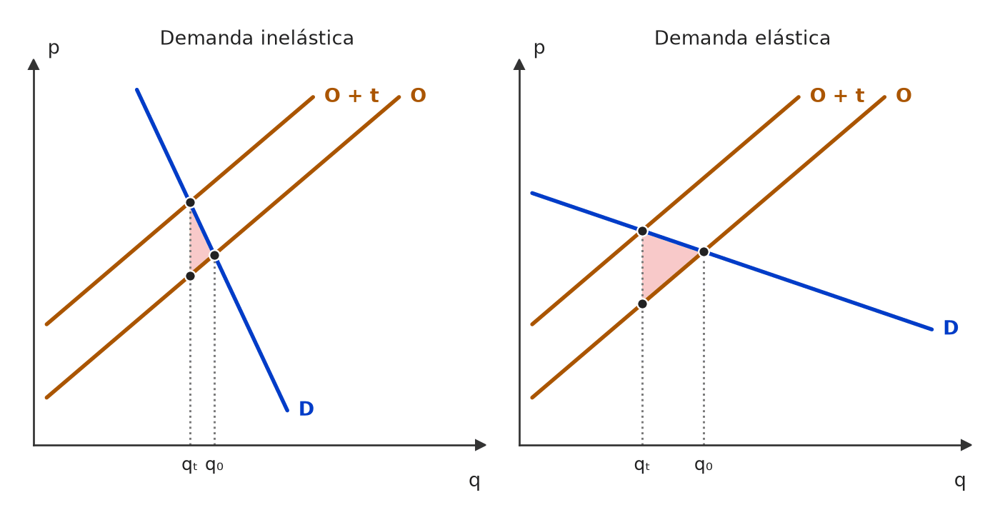
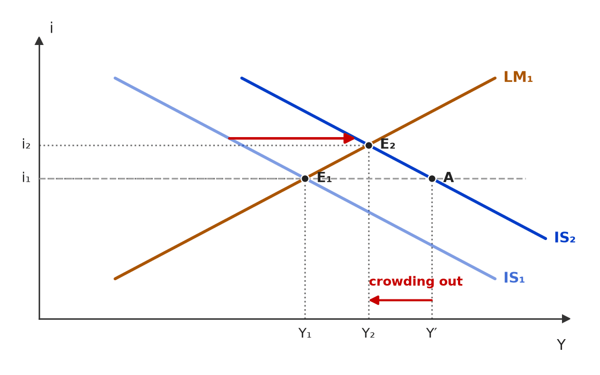
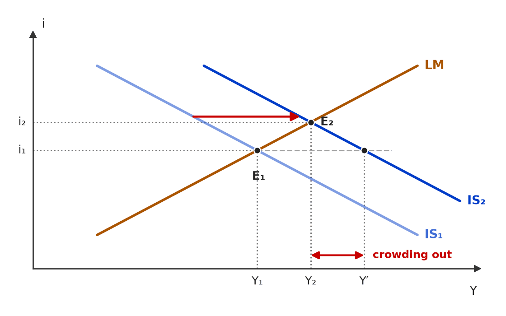

❌ [C/E - CEBRASPE › TJ/PA/2025 › Funções do Estado]No que diz respeito às funções do Estado em um sistema econômico, julgue o item seguinte. Item: A provisão de bens públicos é um exemplo de atuação do Estado no exercício de sua função alocativa. | ✅ CERTO A provisão de bens públicos é um exemplo de atuação do Estado no exercício de sua função alocativa. 🎯 Em poucas palavras: Bens não rivais e não excludentes são subofertados pelo mercado por causa do carona; o Estado os provê para corrigir a alocação — é o exemplo-padrão da função alocativa. 📖 Destrinchando o tema:
🧐 Dissecando a redação do item: [literalidade] Exemplo canônico, sem modulador. O CEBRASPE costuma alternar, no mesmo bloco, itens com a função certa e itens em que troca alocativa por distributiva ou estabilizadora; o par “bens públicos ↔ alocativa” é o mais seguro de todos. 😈 Para dificultar:
|
[C/E - CEBRASPE › TJ/PA/2025 › Funções do Estado]No que diz respeito às funções do Estado em um sistema econômico, julgue o item seguinte. Item: A função econômica estabilizadora do Estado busca suavizar as flutuações do ciclo econômico, controlando a inflação e visando ao pleno emprego. | ✅ CERTO A função econômica estabilizadora do Estado busca suavizar as flutuações do ciclo econômico, controlando a inflação e visando ao pleno emprego. 🎯 Em poucas palavras: A função estabilizadora usa as políticas fiscal e monetária para amortecer o ciclo: inflação controlada e emprego perto do pleno. 📖 Destrinchando o tema:
🧐 Dissecando a redação do item: [literalidade] Definição de manual. O “visando ao” (objetivo, não garantia) e a ausência de “apenas” mantêm o item verdadeiro. 🔥 No mesmo bloco, o CEBRASPE cobrou “provisão de bens públicos = alocativa” (CERTO). 😈 Para dificultar:
|
❌ [C/E - IDEG – Prof. Bozan › Pré-TPS/2026 › Funções do Estado]Considerando as abordagens econômicas relativas à intervenção do governo na economia, especialmente no contexto da política fiscal e das teorias keynesiana e neokeynesiana, julgue o item. Item: Após a crise de 1929, a intervenção do governo na economia por meio de políticas fiscais se intensificou, baseando-se nas ideias de Keynes, que propôs que o governo poderia desempenhar um papel central na regulação dos ciclos econômicos e na mitigação das chamadas falhas de mercado. Neste momento, governo assumiu não apenas um papel regulador, mas também de produção direta em alguns setores, promovendo um crescimento econômico sustentado e a conformação de um estado de bem-estar social pela Europa. | ✅ CERTO Após a crise de 1929, a intervenção do governo na economia por meio de políticas fiscais se intensificou, baseando-se nas ideias de Keynes, que propôs que o governo poderia desempenhar um papel central na regulação dos ciclos econômicos e na mitigação das chamadas falhas de mercado. Neste momento, governo assumiu não apenas um papel regulador, mas também de produção direta em alguns setores, promovendo um crescimento econômico sustentado e a conformação de um estado de bem-estar social pela Europa. 🎯 Em poucas palavras: O item descreve um arco histórico (1930–1970): a crise de 1929 derruba a confiança na autorregulação, Keynes dá base teórica à intervenção e o pós-guerra europeu combina Estado regulador, produtor e de bem-estar. 📖 Destrinchando o tema:
🧐 Dissecando a redação do item: [paráfrase fiel · detalhe] Narrativa de manual sem modulador absoluto. A armadilha é cronológica: quem lembra que a Teoria Geral é de 1936 tende a ver anacronismo. Pergunta-teste: o item afirma uma causalidade pontual (“o New Deal se baseou no livro de 1936”) ou uma tendência de época? Aqui é tendência. 😈 Para dificultar:
🃏 Carta na manga:
|
[C/E - IDEG – Prof. Bozan › Pré-TPS/2026 › Funções do Estado]Considerando as abordagens econômicas relativas à intervenção do governo na economia, especialmente no contexto da política fiscal e das teorias keynesiana e neokeynesiana, julgue o item. Item: Os novos keynesianos defendem que o governo deve atuar especificamente como um parceiro da iniciativa privada, sem suplantá-la, mas sim direcionando e regulando as atividades econômicas para garantir um desenvolvimento sustentado e justo. | ✅ CERTO Os novos keynesianos defendem que o governo deve atuar especificamente como um parceiro da iniciativa privada, sem suplantá-la, mas sim direcionando e regulando as atividades econômicas para garantir um desenvolvimento sustentado e justo. 🎯 Em poucas palavras: Os novos keynesianos aceitam o mercado como alocador principal, mas veem falhas (rigidezes, informação imperfeita) que justificam um governo regulador e estabilizador — complemento, não substituto, do setor privado. 📖 Destrinchando o tema:
🧐 Dissecando a redação do item: [paráfrase fiel] Item de curso com redação vaga (“parceiro”, “desenvolvimento justo”), mas sem erro: a ideia central — governo complementa e regula, não substitui o setor privado — é a dos novos keynesianos. O “especificamente” incomoda, mas não cria exclusão falsa. 😈 Para dificultar:
|
[C/E - IDEG – Prof. Bozan › Pré-TPS/2026 › Funções do Estado]Considerando as abordagens econômicas relativas à intervenção do governo na economia, especialmente no contexto da política fiscal e das teorias keynesiana e neokeynesiana, julgue o item. Item: Uma das críticas dos neoliberais nas décadas de 60 e 70 ao “reinado keynesiano” foi a identificação das patologias associadas ao excesso de intervenção governamental. A partir dessa crítica, a escola neoliberal emergiu defendendo que o governo deveria reduzir sua atuação ao mínimo, abrindo mão de ações de natureza alocativa, distributiva e reguladora, privilegiando o livre mercado. | ❌ ERRADO Uma das críticas dos neoliberais nas décadas de 60 e 70 ao “reinado keynesiano” foi a identificação das patologias associadas ao excesso de intervenção governamental. A partir dessa crítica, a escola neoliberal emergiu defendendo que o governo deveria reduzir sua atuação ao mínimo, abrindo mão de ações de natureza alocativa, distributiva e reguladora, privilegiando o livre mercado. 🎯 Em poucas palavras: Estado mínimo não é Estado ausente: os neoliberais querem menos intervenção, mas mantêm funções essenciais — bens públicos, garantia de contratos e de concorrência, rede básica de proteção. 📖 Destrinchando o tema:
🧐 Dissecando a redação do item: [modulador absoluto · extrapolação] A primeira frase é correta e a segunda começa bem (“reduzir ao mínimo”); o erro é a lista de funções abandonadas, que transforma “mínimo” em “nenhum”. Pista: abrir mão até da regulação é incompatível com a defesa de mercados que funcionem. 😈 Para dificultar:
✍️ Reescrita correta: Uma das críticas dos neoliberais nas décadas de 60 e 70 ao “reinado keynesiano” foi a identificação das patologias associadas ao excesso de intervenção governamental. A partir dessa crítica, a escola neoliberal emergiu defendendo que o governo deveria reduzir sua atuação ao mínimo, preservando, porém, funções essenciais — como bens públicos, garantia de contratos e regulação da concorrência —, privilegiando o livre mercado. |
[C/E - IDEG – Prof. Bozan › Pré-TPS/2026 › Funções do Estado]Considerando as abordagens econômicas relativas à intervenção do governo na economia, especialmente no contexto da política fiscal e das teorias keynesiana e neokeynesiana, julgue o item. Item: Tanto neokeynesianos quanto neoclássicos concordam que o governo deve intervir para corrigir falhas de mercado. No entanto, enquanto os neokeynesianos acreditam que o governo deve atuar também para amenizar ciclos econômicos de expansão e retração, os neoclássicos veem na intervenção governamental o papel apenas de corrigir essas falhas para que o mercado possa chegar naturalmente a um equilíbrio ótimo de Pareto sem a necessidade de intervenções econômicas agressivas no sistema. | ✅ CERTO Tanto neokeynesianos quanto neoclássicos concordam que o governo deve intervir para corrigir falhas de mercado. No entanto, enquanto os neokeynesianos acreditam que o governo deve atuar também para amenizar ciclos econômicos de expansão e retração, os neoclássicos veem na intervenção governamental o papel apenas de corrigir essas falhas para que o mercado possa chegar naturalmente a um equilíbrio ótimo de Pareto sem a necessidade de intervenções econômicas agressivas no sistema. 🎯 Em poucas palavras: Ponto comum: corrigir falhas de mercado (função alocativa). Diferença: os neokeynesianos acrescentam a estabilização do ciclo; os neoclássicos confiam no ajuste do próprio mercado. 📖 Destrinchando o tema:
🧐 Dissecando a redação do item: [paráfrase fiel · modulador relativo] O “apenas” aqui está certo, porque descreve a posição neoclássica, que de fato restringe a intervenção às falhas de mercado. A armadilha é tratar todo “apenas” como sinal de erro: olhe a quem o modulador é atribuído. 😈 Para dificultar:
|
[ME - Banca não identificada › Senado/Consultor/2022 › Funções do Estado]Leia o enunciado a seguir e assinale a opção correta. Questão: Relacione cada função do governo com suas respectivas características: 1. Função Estabilizadora. 2. Função Alocativa. 3. Função Distributiva. ( ) Lança mão da política econômica, a fim de realocar incentivos entre agentes econômicos, visando o crescimento econômico e o máximo de empregos. ( ) Utiliza subsídios tributários para estimular o investimento privado em escolas, ampliando a oferta de vagas. ( ) Um instrumento importante dessa função são as alíquotas progressivas do Imposto sobre a Renda (IR). Assinale a opção que indica a relação correta, na ordem apresentada. (A) 1 – 2 – 3. (B) 1 – 3 – 2. (C) 2 – 1 – 3. (D) 2 – 3 – 1. (E) 3 – 2 – 1. | 🔵 Letra A ✅ (A) 1 – 2 – 3. ❌ (B) 1 – 3 – 2. ❌ (C) 2 – 1 – 3. ❌ (D) 2 – 3 – 1. ❌ (E) 3 – 2 – 1. 🎯 Em poucas palavras: Crescimento e emprego → estabilizadora; incentivo à oferta de educação → alocativa; IR progressivo → distributiva. Ordem 1 – 2 – 3. 📖 Destrinchando o tema:
🧐 Dissecando a redação do item: [troca de conceito] Questão de associação: resolve-se pelas palavras-gatilho (emprego/crescimento → estabilizadora; bem público ou meritório → alocativa; progressividade/renda → distributiva). A armadilha está no verbo “realocar” do 1º parêntese, posto para puxar o candidato para a alocativa. 🔥 A tríade de Musgrave é tema recorrente de setor público. 😈 Para dificultar:
|
[C/E - Banca não identificada › 2022 › Funções do Estado]Acerca das funções econômicas do governo e dos objetivos da política fiscal, julgue o item a seguir. Item: A ação do governo por meio da política fiscal tem como função buscar um alto nível de emprego, estabilidade de preços e taxas apropriadas de crescimento. | ✅ CERTO A ação do governo por meio da política fiscal tem como função buscar um alto nível de emprego, estabilidade de preços e taxas apropriadas de crescimento. 🎯 Em poucas palavras: É a definição da função estabilizadora da política fiscal, quase literal em Giambiagi e Além. 📖 Destrinchando o tema:
🧐 Dissecando a redação do item: [literalidade] Reprodução quase textual do manual. O risco era desconfiar da lista tripla (emprego, preços, crescimento) achando que algum dos objetivos é só da política monetária; na doutrina, os três compõem a função estabilizadora. 😈 Para dificultar:
|
❌ [C/E - Banca não identificada › 2022 › Funções do Estado]Acerca das funções econômicas do governo e dos objetivos da política fiscal, julgue o item a seguir. Item: Por intermédio da política fiscal, pode-se dizer que o processo político surge como mecanismo substituto ao sistema de mercado, ao dispor em relação a alocações de bens públicos. | ✅ CERTO Por intermédio da política fiscal, pode-se dizer que o processo político surge como mecanismo substituto ao sistema de mercado, ao dispor em relação a alocações de bens públicos. 🎯 Em poucas palavras: Para bens públicos, o sistema de preços falha; quem decide o que e quanto ofertar é o processo político (orçamento votado), que faz as vezes do mercado na função alocativa. 📖 Destrinchando o tema:
🧐 Dissecando a redação do item: [paráfrase fiel · contraintuitivo] A linguagem rebuscada (“ao dispor em relação a alocações”) e a palavra “substituto” assustam, mas a tese é a de manual. Pista: o item restringe o papel do processo político aos bens públicos, exatamente onde o mercado falha. 😈 Para dificultar:
|
[C/E - Banca não identificada › 2022 › Funções do Estado]Acerca das funções econômicas do governo e dos objetivos da política fiscal, julgue o item a seguir. Item: A política fiscal é incapaz de alterar a distribuição funcional da renda de uma sociedade. | ❌ ERRADO A política fiscal é incapaz de alterar a distribuição funcional da renda de uma sociedade. 🎯 Em poucas palavras: A função distributiva existe justamente porque tributos e gastos alteram a repartição da renda — entre pessoas e entre fatores (salários × lucros, juros e aluguéis). 📖 Destrinchando o tema:
🧐 Dissecando a redação do item: [modulador absoluto · contradição] “Incapaz” é absoluto e contraria a doutrina. O adjetivo “funcional” tenta fazer o candidato hesitar (a distribuição entre fatores parece “do mercado”), mas tributar capital e trabalho de forma diferente já a altera. 🔥 Absolutos negativos (“incapaz”, “nunca”) em funções do governo são quase sempre ERRADO. 😈 Para dificultar:
✍️ Reescrita correta: A política fiscal é capaz de alterar a distribuição funcional da renda de uma sociedade. |
[C/E - Banca não identificada › 2022 › Funções do Estado]Acerca das funções econômicas do governo e dos objetivos da política fiscal, julgue o item a seguir. Item: Um dos principais instrumentos da função distributiva da política fiscal são os tributos. | ✅ CERTO Um dos principais instrumentos da função distributiva da política fiscal são os tributos. 🎯 Em poucas palavras: A função distributiva usa os dois lados do orçamento: tributação progressiva (arrecadar mais de quem ganha mais) e transferências e gastos focalizados. Os tributos são um dos instrumentos centrais. 📖 Destrinchando o tema:
🧐 Dissecando a redação do item: [literalidade · modulador relativo] “Um dos” protege o item: não afirma que os tributos sejam o único nem o principal instrumento. A troca perigosa seria por “o único” ou “exclusivamente”. 😈 Para dificultar:
|
[C/E - Banca não identificada › Funções do Estado]Julgue o item a seguir, relativo à atuação do Estado na economia. Item: A ocorrência de desemprego e inflação constitui falha de mercado que justifica a intervenção estatal na economia por meio da função estabilizadora da política econômica. | ✅ CERTO A ocorrência de desemprego e inflação constitui falha de mercado que justifica a intervenção estatal na economia por meio da função estabilizadora da política econômica. 🎯 Em poucas palavras: Na lista clássica dos manuais, desemprego e inflação figuram entre as falhas de mercado, e a resposta do Estado a elas é a função estabilizadora. 📖 Destrinchando o tema:
🧐 Dissecando a redação do item: [contraintuitivo · literalidade] Quem associa falha de mercado só a fenômenos micro (externalidade, monopólio) tende a marcar ERRADO. O item reproduz a lista do manual de finanças públicas, que inclui desemprego e inflação. 😈 Para dificultar:
|
[C/E - Banca não identificada › Funções do Estado]Acerca das funções econômicas do governo — alocativa, distributiva e estabilizadora —, julgue o item a seguir. Item: Um exemplo de materialização da função estabilizadora do governo é dado pelo provimento de bens meritórios. | ❌ ERRADO Um exemplo de materialização da função estabilizadora do governo é dado pelo provimento de bens meritórios. 🎯 Em poucas palavras: Prover bens meritórios é tarefa da função alocativa: o governo decide o que produzir quando o mercado oferta menos que o socialmente desejável. 📖 Destrinchando o tema:
🧐 Dissecando a redação do item: [troca de conceito] Série clássica “um exemplo de materialização da função X é…”: a banca troca a função correspondente. Bens meritórios lembram “bem-estar social” e induzem à distributiva ou à estabilizadora, mas são alocativos. 😈 Para dificultar:
✍️ Reescrita correta: Um exemplo de materialização da função alocativa do governo é dado pelo provimento de bens meritórios. |
[C/E - Banca não identificada › Funções do Estado]Acerca das funções econômicas do governo — alocativa, distributiva e estabilizadora —, julgue o item a seguir. Item: Um exemplo de materialização da função estabilizadora do governo é dado pela redistribuição de renda por meio da política fiscal. | ❌ ERRADO Um exemplo de materialização da função estabilizadora do governo é dado pela redistribuição de renda por meio da política fiscal. 🎯 Em poucas palavras: Redistribuir renda é a função distributiva. Usar política fiscal não basta para ser estabilizadora: o que define a função é o objetivo, não o instrumento. 📖 Destrinchando o tema:
🧐 Dissecando a redação do item: [troca de conceito] A banca ancora o item num instrumento que de fato serve à estabilização (política fiscal) para disfarçar a troca de função. A finalidade (“redistribuição de renda”) está escrita no próprio item. 😈 Para dificultar:
✍️ Reescrita correta: Um exemplo de materialização da função distributiva do governo é dado pela redistribuição de renda por meio da política fiscal. |
[C/E - Banca não identificada › Funções do Estado]Acerca das funções econômicas do governo — alocativa, distributiva e estabilizadora —, julgue o item a seguir. Item: Um exemplo de materialização da função estabilizadora do governo é dado pela condução da política monetária. | ✅ CERTO Um exemplo de materialização da função estabilizadora do governo é dado pela condução da política monetária. 🎯 Em poucas palavras: A política monetária existe para estabilizar preços e suavizar o ciclo — é instrumento típico da função estabilizadora. 📖 Destrinchando o tema:
🧐 Dissecando a redação do item: [literalidade] Único CERTO da série “um exemplo de materialização da função estabilizadora é…”: bens meritórios (alocativa) e redistribuição de renda (distributiva) são os distratores. Política monetária é estabilização por excelência. 😈 Para dificultar:
|
[C/E - Banca não identificada › Funções do Estado]Julgue o item a seguir, relativo à atuação do Estado na economia. Item: Uma forma de analisar a ação pública na economia se dá ao considerar o papel do Estado na utilização da política monetária, em sua função estabilizadora. | ✅ CERTO Uma forma de analisar a ação pública na economia se dá ao considerar o papel do Estado na utilização da política monetária, em sua função estabilizadora. 🎯 Em poucas palavras: A ação do Estado se analisa pelas três funções de Musgrave; o uso da política monetária pertence à função estabilizadora. 📖 Destrinchando o tema:
🧐 Dissecando a redação do item: [literalidade · modulador relativo] “Uma forma de” relativiza a afirmação; a associação política monetária → função estabilizadora é a de manual. A banca também cobra a versão “um exemplo de materialização da função estabilizadora é a política monetária”, igualmente CERTA. 😈 Para dificultar:
|
[C/E - Banca não identificada › Funções do Estado]Julgue o item a seguir, relativo à atuação do Estado na economia. Item: Como possível objetivo do financiamento público em projetos de infraestrutura, aponta-se o não interesse do setor privado em financiar projetos centrais no desenvolvimento socioeconômico do país. | ✅ CERTO Como possível objetivo do financiamento público em projetos de infraestrutura, aponta-se o não interesse do setor privado em financiar projetos centrais no desenvolvimento socioeconômico do país. 🎯 Em poucas palavras: Infraestrutura tem prazos longos, alto risco e benefícios sociais que o investidor não captura: o setor privado financia menos que o desejável, e o financiamento público preenche a lacuna. 📖 Destrinchando o tema:
🧐 Dissecando a redação do item: [modulador relativo · literalidade] “Possível objetivo” protege o item: não se afirma que o setor privado nunca financia infraestrutura, só que seu desinteresse é uma das razões para a atuação pública. 😈 Para dificultar:
|
[C/E - Banca não identificada › Funções do Estado]Acerca das funções econômicas do governo, julgue o item a seguir. Item: Dentre as funções econômicas do governo, a função estabilizadora faz uso das políticas fiscal e monetária para garantir o bom uso qualitativo dos recursos nacionais e a mitigação de externalidades. | ❌ ERRADO Dentre as funções econômicas do governo, a função estabilizadora faz uso das políticas fiscal e monetária para garantir o bom uso qualitativo dos recursos nacionais e a mitigação de externalidades. 🎯 Em poucas palavras: Uso qualitativo dos recursos e correção de externalidades são tarefas da função alocativa; a estabilizadora cuida do nível agregado: emprego, preços e crescimento. 📖 Destrinchando o tema:
🧐 Dissecando a redação do item: [troca de conceito] O item acerta os instrumentos da estabilizadora (fiscal e monetária) e cola neles o objetivo da alocativa. Pista: “uso qualitativo” e “externalidades” são vocabulário de eficiência alocativa, não de ciclo econômico. 😈 Para dificultar:
✍️ Reescrita correta: Dentre as funções econômicas do governo, a função estabilizadora faz uso das políticas fiscal e monetária para garantir o pleno emprego, a estabilidade de preços e o crescimento equilibrado. |
[C/E - Banca não identificada › Funções do Estado]Acerca das funções econômicas do governo, julgue o item a seguir. Item: A função alocativa prevê ajustamentos na alocação de recursos com vistas à maior eficiência na utilização dos recursos disponíveis na economia e refere-se à possibilidade de economias externas ou necessidades coletivas, como infraestrutura econômica. | ✅ CERTO A função alocativa prevê ajustamentos na alocação de recursos com vistas à maior eficiência na utilização dos recursos disponíveis na economia e refere-se à possibilidade de economias externas ou necessidades coletivas, como infraestrutura econômica. 🎯 Em poucas palavras: É a definição de manual: a função alocativa busca eficiência onde o mercado falha — externalidades, bens públicos e necessidades coletivas como a infraestrutura. 📖 Destrinchando o tema:
🧐 Dissecando a redação do item: [literalidade] Paráfrase próxima dos manuais brasileiros de finanças públicas. O risco está em achar que “infraestrutura” seria função de desenvolvimento ou estabilizadora; não é — é composição do produto, logo alocativa. 😈 Para dificultar:
|
[C/E - Banca não identificada › Funções do Estado]Acerca das funções econômicas do governo, julgue o item a seguir. Item: A função distributiva busca tornar compatíveis entre si a distribuição das remunerações dos fatores resultantes da atividade econômica via mercado e aquela que atende aos princípios de justiça social. | ✅ CERTO A função distributiva busca tornar compatíveis entre si a distribuição das remunerações dos fatores resultantes da atividade econômica via mercado e aquela que atende aos princípios de justiça social. 🎯 Em poucas palavras: O mercado remunera os fatores pela produtividade e pela dotação inicial; a função distributiva aproxima essa repartição daquela que a sociedade considera justa. 📖 Destrinchando o tema:
🧐 Dissecando a redação do item: [literalidade] Reproduz a definição de Musgrave na versão dos manuais brasileiros. A redação rebuscada (“tornar compatíveis entre si”) assusta, mas não há modulador nem troca de função. 😈 Para dificultar:
|
[C/E - Banca não identificada › Funções do Estado]Acerca das funções econômicas do governo, julgue o item a seguir. Item: A função competitiva do governo decorre diretamente da presença de bens comuns, os quais são oferecidos simultaneamente pelo Estado e pelo setor privado, como é o caso da educação básica e do sistema de saúde. | ❌ ERRADO A função competitiva do governo decorre diretamente da presença de bens comuns, os quais são oferecidos simultaneamente pelo Estado e pelo setor privado, como é o caso da educação básica e do sistema de saúde. 🎯 Em poucas palavras: Não existe “função competitiva” na tripartição de Musgrave. Educação e saúde, ofertadas pelo Estado e pelo mercado, são bens meritórios, tratados na função alocativa — e não “bens comuns”. 📖 Destrinchando o tema:
🧐 Dissecando a redação do item: [troca de conceito · outro: função inexistente] O item inventa uma quarta função e a amarra a uma classificação de bens trocada (comum × meritório). A parte descritiva — oferta simultânea por Estado e mercado — é verdadeira e dá a falsa sensação de acerto. 😈 Para dificultar:
✍️ Reescrita correta: A função alocativa do governo abrange a oferta de bens meritórios, os quais são oferecidos simultaneamente pelo Estado e pelo setor privado, como é o caso da educação básica e do sistema de saúde. |
[C/E - Banca não identificada › Funções do Estado]Acerca das funções econômicas do governo, julgue o item a seguir. Item: A função alocativa decorre da existência de bens públicos. | ✅ CERTO A função alocativa decorre da existência de bens públicos. 🎯 Em poucas palavras: Os bens públicos são a razão de ser mais clássica da função alocativa: o mercado não os oferece em quantidade eficiente, e o governo precisa provê-los. 📖 Destrinchando o tema:
🧐 Dissecando a redação do item: [literalidade · modulador relativo] Item curto e de manual. Quem conhece a lista completa de falhas de mercado pode estranhar a ausência das externalidades e marcar ERRADO; mas a falta de “apenas” mantém o item verdadeiro. 😈 Para dificultar:
|
[C/E - Banca não identificada › Funções do Estado]Acerca das funções econômicas do governo, julgue o item a seguir. Item: A função estabilizadora implica o uso das políticas fiscal e monetária para garantir o bom uso dos recursos apenas em momentos de recessão, quando o desemprego aumenta e a taxa de câmbio se valoriza. | ❌ ERRADO A função estabilizadora implica o uso das políticas fiscal e monetária para garantir o bom uso dos recursos apenas em momentos de recessão, quando o desemprego aumenta e a taxa de câmbio se valoriza. 🎯 Em poucas palavras: A função estabilizadora é contracíclica nos dois sentidos: estimula na recessão e contém a demanda no superaquecimento inflacionário. O “apenas” mata o item. 📖 Destrinchando o tema:
🧐 Dissecando a redação do item: [restrição indevida · nexo indevido] O núcleo (fiscal e monetária para estabilizar) é correto; o erro está no “apenas”, que corta metade do ciclo, e no câmbio enxertado como traço típico da recessão. 🔥 “Apenas”, “somente” e “exclusivamente” em itens de funções do Estado quase sempre indicam ERRADO. 😈 Para dificultar:
✍️ Reescrita correta: A função estabilizadora implica o uso das políticas fiscal e monetária para garantir o bom uso dos recursos tanto em momentos de recessão, quando o desemprego aumenta |
[C/E - Banca não identificada › Funções do Estado]Acerca do papel do Estado no desenvolvimento econômico, julgue o item a seguir. Item: No que se refere ao desenvolvimento econômico, cabe ao Estado ajustar-se aos objetivos econômicos dos grupos economicamente mais relevantes, buscando sempre reduzir a tributação incidente sobre os empresários. | ❌ ERRADO No que se refere ao desenvolvimento econômico, cabe ao Estado ajustar-se aos objetivos econômicos dos grupos economicamente mais relevantes, buscando sempre reduzir a tributação incidente sobre os empresários. 🎯 Em poucas palavras: O Estado orienta-se pelo interesse coletivo — crescimento com redução de desigualdades —, não pelos objetivos de grupos dominantes; e nenhuma teoria prescreve reduzir sempre a tributação de um grupo. 📖 Destrinchando o tema:
🧐 Dissecando a redação do item: [juízo indevido · modulador absoluto] O item atribui ao Estado uma finalidade normativamente inaceitável (servir aos mais fortes) e a reforça com “sempre”. Itens de papel do Estado com sujeito restrito (“grupos mais relevantes”, “empresários”) costumam ser ERRADO. 😈 Para dificultar:
✍️ Reescrita correta: No que se refere ao desenvolvimento econômico, cabe ao Estado orientar-se pelo interesse coletivo, promovendo crescimento com redução das desigualdades, e não pelos objetivos de grupos específicos. |
[C/E - Banca não identificada › Funções do Estado]Acerca do papel do Estado no desenvolvimento econômico, julgue o item a seguir. Item: No que se refere ao desenvolvimento econômico, cabe ao Estado investir em infraestrutura, promover o investimento privado em setores estratégicos e garantir o acesso da população à educação e saúde. | ✅ CERTO No que se refere ao desenvolvimento econômico, cabe ao Estado investir em infraestrutura, promover o investimento privado em setores estratégicos e garantir o acesso da população à educação e saúde. 🎯 Em poucas palavras: As três tarefas são papéis consensuais do Estado no desenvolvimento: infraestrutura (bem público e externalidade), indução do investimento e capital humano. 📖 Destrinchando o tema:
🧐 Dissecando a redação do item: [literalidade] Enumera papéis de consenso, sem modulador absoluto (“sempre”, “exclusivamente”) e sem atribuir ao Estado tarefa que caiba só ao mercado. Contraste típico da banca: a versão em que o Estado se ajusta aos interesses dos grupos mais fortes, que é ERRADO. 🃏 Carta na manga:
|
[C/E - Banca não identificada › Funções do Estado]Acerca das funções econômicas do governo, julgue o item a seguir. Item: A função desenvolvida pelo Estado com o objetivo de assegurar o ajustamento necessário na apropriação de recursos na economia, visando a correção das imperfeições inerentes à própria lógica de mercado, denomina-se função alocativa. | ✅ CERTO A função desenvolvida pelo Estado com o objetivo de assegurar o ajustamento necessário na apropriação de recursos na economia, visando a correção das imperfeições inerentes à própria lógica de mercado, denomina-se função alocativa. 🎯 Em poucas palavras: Ajustar a alocação de recursos para corrigir falhas de mercado é exatamente a função alocativa. 📖 Destrinchando o tema:
🧐 Dissecando a redação do item: [paráfrase fiel] Definição de manual com vocabulário pouco usual (“apropriação de recursos”). A tentação é ler “ajustamento” como estabilização; o que decide é “imperfeições da lógica de mercado” = falhas de mercado = alocativa. 😈 Para dificultar:
|
[C/E - CEBRASPE › TJ/PA/2025 › Tributação: princípios e incidência]Julgue o item seguinte, relativo à estrutura tributária brasileira. Item: A estrutura tributária brasileira é eminentemente progressiva, ou seja, a proporção da renda destinada aos impostos aumenta conforme a renda do contribuinte diminui. | ❌ ERRADO A estrutura tributária brasileira é eminentemente progressiva, ou seja, a proporção da renda destinada aos impostos aumenta conforme a renda do contribuinte diminui. 🎯 Em poucas palavras: O sistema brasileiro é regressivo — e a própria explicação do item (a carga pesa mais conforme a renda diminui) é a definição de regressividade, não de progressividade. 📖 Destrinchando o tema:
🧐 Dissecando a redação do item: [troca de conceito · contradição] O item rotula o sistema como progressivo e, no “ou seja”, descreve a regressividade: a definição contradiz o rótulo. O conteúdo descrito é verdadeiro para o Brasil; o erro está só na palavra “progressiva”. 🔥 O CEBRASPE gosta de testar se o candidato confere a definição que o próprio item oferece. 😈 Para dificultar:
✍️ Reescrita correta: A estrutura tributária brasileira é eminentemente regressiva, ou seja, a proporção da renda destinada aos impostos aumenta conforme a renda do contribuinte diminui. |
[C/E - Banca não identificada › 2013 › Tributação: princípios e incidência]Julgue o item a seguir, relativo à carga tributária. Item: O índice da carga tributária corresponde ao total da arrecadação fiscal do Ministério da Fazenda em relação à renda nacional bruta. | ❌ ERRADO O índice da carga tributária corresponde ao total da arrecadação fiscal do Ministério da Fazenda em relação à renda nacional bruta. 🎯 Em poucas palavras: Carga tributária = arrecadação de todas as esferas de governo (União, estados e municípios) ÷ PIB. O item erra o numerador (só o federal) e o denominador (RNB). 📖 Destrinchando o tema:
🧐 Dissecando a redação do item: [restrição indevida · troca de conceito] Dois erros independentes: restringe a arrecadação ao Ministério da Fazenda (âmbito federal) e troca o PIB pela RNB, agregado vizinho e de valor próximo. Bastaria um deles para o ERRADO; a banca empilha para testar quem só confere o primeiro. 😈 Para dificultar:
✍️ Reescrita correta: O índice da carga tributária corresponde ao total da arrecadação fiscal das três esferas de governo (União, estados e municípios) em relação ao produto interno bruto (PIB). |
[C/E - Banca não identificada › Tributação: princípios e incidência]Julgue o item a seguir, relativo aos princípios da tributação. Item: Para reduzir as distorções e minimizar as perdas de eficiência, a teoria da tributação ótima propõe que os bens com menor elasticidade-preço da demanda devem ser mais tributados. | ✅ CERTO Para reduzir as distorções e minimizar as perdas de eficiência, a teoria da tributação ótima propõe que os bens com menor elasticidade-preço da demanda devem ser mais tributados. 🎯 Em poucas palavras: É a regra de Ramsey (da elasticidade inversa): o peso morto vem da queda da quantidade; onde a demanda é inelástica, a quantidade quase não reage e o imposto distorce pouco. 📖 Destrinchando o tema:
📈 No gráfico:  Mesmo imposto t e mesma oferta nos dois painéis. Com demanda inelástica (à esquerda), a quantidade quase não cai e o peso morto é um triângulo estreito; com demanda elástica (à direita), a quantidade despenca e o peso morto é bem maior. 🧐 Dissecando a redação do item: [literalidade · contraintuitivo] É a regra de manual, mas o senso comum de justiça (“não tributar o essencial”) empurra para ERRADO. O item fala só em eficiência: nesse critério, tributar o inelástico é o correto. 😈 Para dificultar:
|
[C/E - Banca não identificada › Tributação: princípios e incidência]Julgue o item a seguir, relativo aos princípios da tributação. Item: Um imposto do tipo lump-sum tax, em que os cidadãos pagam o mesmo montante de imposto independentemente de sua renda, é um imposto que influencia negativamente a eficiência alocativa do setor privado da economia. | ❌ ERRADO Um imposto do tipo lump-sum tax, em que os cidadãos pagam o mesmo montante de imposto independentemente de sua renda, é um imposto que influencia negativamente a eficiência alocativa do setor privado da economia. 🎯 Em poucas palavras: O imposto lump-sum (montante fixo) é o benchmark do imposto neutro: como o valor não depende de nenhuma decisão, não altera preços relativos e não gera peso morto. Seu problema é a equidade, não a eficiência. 📖 Destrinchando o tema:
🧐 Dissecando a redação do item: [troca de conceito · inversão] O item atribui ao lump-sum o defeito errado: ele falha em equidade, não em eficiência. O próprio enunciado entrega a pista — “independentemente de sua renda” descreve um imposto que não muda com escolha alguma. 😈 Para dificultar:
✍️ Reescrita correta: Um imposto do tipo lump-sum tax, em que os cidadãos pagam o mesmo montante de imposto independentemente de sua renda, é um imposto que não influencia a eficiência alocativa do setor privado da economia. |
[C/E - Banca não identificada › Tributação: princípios e incidência]Julgue o item a seguir, relativo aos princípios da tributação. Item: Nas chamadas excise taxes, o Governo se afasta, deliberadamente, do objetivo de alterar o mínimo possível os preços relativos da economia, por se tratar de consumo de bens considerados nocivos à saúde pública ou de consumo supérfluo. | ✅ CERTO Nas chamadas excise taxes, o Governo se afasta, deliberadamente, do objetivo de alterar o mínimo possível os preços relativos da economia, por se tratar de consumo de bens considerados nocivos à saúde pública ou de consumo supérfluo. 🎯 Em poucas palavras: As excise taxes (impostos seletivos) existem justamente para mudar preços relativos: encarecer cigarro, álcool ou bens supérfluos e reduzir seu consumo — abrem mão da neutralidade de propósito. 📖 Destrinchando o tema:
🧐 Dissecando a redação do item: [literalidade · exceção] O item cobra a exceção ao princípio da neutralidade. O advérbio “deliberadamente” é o ponto: o afastamento é intencional, não um efeito colateral. 😈 Para dificultar:
|
[C/E - Banca não identificada › Tributação: princípios e incidência]Julgue o item a seguir, relativo aos princípios da tributação. Item: Um imposto progressivo sobre a renda atende melhor ao princípio da equidade vertical na hipótese de que a utilidade marginal da renda seja decrescente. | ✅ CERTO Um imposto progressivo sobre a renda atende melhor ao princípio da equidade vertical na hipótese de que a utilidade marginal da renda seja decrescente. 🎯 Em poucas palavras: Se cada real adicional vale menos para quem tem mais (utilidade marginal decrescente), tirar R$ 1 do rico custa menos bem-estar que tirá-lo do pobre: para igualar o sacrifício, o rico deve pagar proporcionalmente mais. 📖 Destrinchando o tema:
🧐 Dissecando a redação do item: [literalidade · modulador relativo] Relação de manual entre progressividade e utilidade marginal decrescente. A pegadinha mais comum é trocar “decrescente” por “crescente” ou “constante”. 😈 Para dificultar:
|
[C/E - Banca não identificada › Tributação: princípios e incidência]Julgue o item a seguir, relativo aos princípios da tributação. Item: Um imposto proporcional sobre a renda influencia menos as decisões de trabalho versus lazer das pessoas físicas que um imposto progressivo. | ✅ CERTO Um imposto proporcional sobre a renda influencia menos as decisões de trabalho versus lazer das pessoas físicas que um imposto progressivo. 🎯 Em poucas palavras: A escolha trabalho × lazer responde à alíquota marginal. Para arrecadar o mesmo, o imposto progressivo precisa de alíquotas marginais mais altas no topo — e distorce mais a decisão de trabalhar a hora extra. 📖 Destrinchando o tema:
🧐 Dissecando a redação do item: [literalidade · contraintuitivo] Item comparativo de manual. Quem pensa em justiça tende a defender o progressivo e marcar ERRADO; o critério aqui é só a distorção da escolha trabalho × lazer. 😈 Para dificultar:
|
[C/E - Banca não identificada › Tributação: princípios e incidência]Julgue o item a seguir, relativo aos princípios da tributação. Item: Um imposto sobre vendas com alíquota fixa onera os contribuintes de forma progressiva, ou seja, onera igualmente os contribuintes independentemente de sua capacidade de pagamento. | ❌ ERRADO Um imposto sobre vendas com alíquota fixa onera os contribuintes de forma progressiva, ou seja, onera igualmente os contribuintes independentemente de sua capacidade de pagamento. 🎯 Em poucas palavras: Imposto sobre vendas com alíquota fixa é regressivo em relação à renda: os pobres consomem quase toda a renda, os ricos poupam parte — o imposto pesa mais, em % da renda, para quem ganha menos. 📖 Destrinchando o tema:
🧐 Dissecando a redação do item: [troca de conceito · contradição] Troca “regressiva” por “progressiva” e ainda define progressividade errado. Pista: a alíquota fixa engana — fixa sobre o consumo não é fixa sobre a renda. 😈 Para dificultar:
✍️ Reescrita correta: Um imposto sobre vendas com alíquota fixa onera os contribuintes de forma regressiva, ou seja, onera proporcionalmente mais os contribuintes de menor capacidade de pagamento. |
[C/E - Banca não identificada › Tributação: princípios e incidência]Julgue o item a seguir, relativo aos princípios da tributação. Item: A carga tributária, segundo o princípio da equidade, deve onerar mais fortemente os contribuintes que obtêm mais benefícios provenientes da atuação do governo sobre a economia. | ❌ ERRADO A carga tributária, segundo o princípio da equidade, deve onerar mais fortemente os contribuintes que obtêm mais benefícios provenientes da atuação do governo sobre a economia. 🎯 Em poucas palavras: Cobrar conforme o benefício recebido é o princípio do benefício. O princípio da equidade (ou da capacidade de pagamento) manda cobrar conforme a capacidade contributiva. 📖 Destrinchando o tema:
🧐 Dissecando a redação do item: [troca de conceito] A definição é a do princípio do benefício com o rótulo do princípio da equidade. Pista: “mais benefícios provenientes da atuação do governo” — a palavra benefício está no próprio item. 😈 Para dificultar:
✍️ Reescrita correta: A carga tributária, segundo o princípio do benefício, deve onerar mais fortemente os contribuintes que obtêm mais benefícios provenientes da atuação do governo sobre a economia. |
[C/E - Banca não identificada › Tributação: princípios e incidência]Julgue o item a seguir, relativo à incidência de tributos em mercados competitivos. Item: Com relação à incidência de um imposto sobre vendas de um bem X num mercado em concorrência perfeita, é correto afirmar que o imposto é regressivo, porque tende a onerar mais fortemente os consumidores mais ricos. | ❌ ERRADO Com relação à incidência de um imposto sobre vendas de um bem X num mercado em concorrência perfeita, é correto afirmar que o imposto é regressivo, porque tende a onerar mais fortemente os consumidores mais ricos. 🎯 Em poucas palavras: O imposto sobre vendas é, de fato, regressivo, mas pelo motivo oposto: pesa mais, em proporção da renda, sobre os mais pobres, que consomem quase tudo o que ganham. 📖 Destrinchando o tema:
🧐 Dissecando a redação do item: [meia-verdade · inversão] A conclusão (“é regressivo”) está certa; o erro foi enxertado na justificativa, que inverte o grupo onerado. O conector “porque” é o ponto a conferir: a banca costuma acertar a classificação e trocar o motivo. Pista: onerar mais os ricos é a definição de progressivo, o que contradiz a própria oração principal. 😈 Para dificultar:
✍️ Reescrita correta: Com relação à incidência de um imposto sobre vendas de um bem X num mercado em concorrência perfeita, é correto afirmar que o imposto é regressivo, porque tende a onerar mais fortemente os consumidores mais pobres, que gastam em consumo uma fração maior da renda. |
[C/E - Banca não identificada › Tributação: princípios e incidência]Julgue o item a seguir, relativo aos princípios da tributação e à incidência tributária. Item: Segundo o princípio do benefício, uma tributação justa é aquela que faz com que o indivíduo pague o tributo de modo a igualar o preço do serviço recebido ao benefício marginal que ele aufere com sua utilização. | ✅ CERTO Segundo o princípio do benefício, uma tributação justa é aquela que faz com que o indivíduo pague o tributo de modo a igualar o preço do serviço recebido ao benefício marginal que ele aufere com sua utilização. 🎯 Em poucas palavras: No princípio do benefício o tributo funciona como um preço: cada um paga pelo serviço público o equivalente ao benefício marginal que obtém, como num mercado. 📖 Destrinchando o tema:
🧐 Dissecando a redação do item: [literalidade · detalhe] Definição de manual com um termo técnico decisivo: “benefício marginal”. A banca poderia trocar por “benefício total” ou “custo marginal de produção”, ou atribuir a definição à capacidade de pagamento. 😈 Para dificultar:
|
[C/E - Banca não identificada › Tributação: princípios e incidência]Julgue o item a seguir, relativo aos princípios da tributação e à incidência tributária. Item: Observa-se o princípio da neutralidade tributária quando as decisões alocativas dos diferentes agentes são afetadas por alterações dos preços relativos desencadeadas pela tributação. | ❌ ERRADO Observa-se o princípio da neutralidade tributária quando as decisões alocativas dos diferentes agentes são afetadas por alterações dos preços relativos desencadeadas pela tributação. 🎯 Em poucas palavras: Tributo neutro é o que não altera preços relativos nem, portanto, as decisões de consumir, produzir e investir. O item descreve a quebra da neutralidade. 📖 Destrinchando o tema:
🧐 Dissecando a redação do item: [inversão] O item pega a descrição da distorção e a chama de neutralidade: trocou-se “não são afetadas” por “são afetadas”. O resto (decisões alocativas, preços relativos, tributação) é vocabulário correto, o que dá ar de verdade à frase. 😈 Para dificultar:
✍️ Reescrita correta: Observa-se o princípio da neutralidade tributária quando as decisões alocativas dos diferentes agentes não são afetadas por alterações dos preços relativos desencadeadas pela tributação. |
[C/E - Banca não identificada › Tributação: princípios e incidência]Julgue o item a seguir, relativo aos princípios da tributação e à incidência tributária. Item: A adoção de um Imposto de Renda regressivo, embora contrarie orientações redistributivas, atende o princípio da capacidade de pagamento. | ❌ ERRADO A adoção de um Imposto de Renda regressivo, embora contrarie orientações redistributivas, atende o princípio da capacidade de pagamento. 🎯 Em poucas palavras: A capacidade de pagamento pede que quem tem mais renda contribua com parcela maior; um IR regressivo faz o contrário e viola o princípio, não o atende. 📖 Destrinchando o tema:
🧐 Dissecando a redação do item: [contradição · nexo indevido] O conector concessivo “embora” fabrica uma oposição falsa entre redistribuição e capacidade de pagamento, que andam juntas. Ao admitir que o tributo contraria a redistribuição, o próprio item entrega o erro. 😈 Para dificultar:
✍️ Reescrita correta: A adoção de um Imposto de Renda regressivo, além de contrariar orientações redistributivas, viola o princípio da capacidade de pagamento. |
[C/E - Banca não identificada › Tributação: princípios e incidência]Julgue o item a seguir, relativo aos princípios da tributação e à incidência tributária. Item: O princípio da equidade é observado quando o ônus da tributação é distribuído de maneira justa entre os indivíduos. | ✅ CERTO O princípio da equidade é observado quando o ônus da tributação é distribuído de maneira justa entre os indivíduos. 🎯 Em poucas palavras: É a definição de equidade tributária: repartir o ônus de forma justa. O debate está em como medir o justo — pelo benefício ou pela capacidade de pagamento. 📖 Destrinchando o tema:
🧐 Dissecando a redação do item: [literalidade] Definição genérica, sem armadilha de modulador. A banca costuma fabricar o ERRADO trocando a equidade pela neutralidade (“não alterar decisões”) ou dizendo que a progressividade a contraria. 😈 Para dificultar:
|
[C/E - Banca não identificada › Tributação: princípios e incidência]Julgue o item a seguir, relativo aos princípios da tributação e à incidência tributária. Item: Nas relações entre tributação e atividade econômica: os impostos regressivos geram uma contribuição proporcionalmente maior que o incremento ocorrido na renda. | ❌ ERRADO Nas relações entre tributação e atividade econômica: os impostos regressivos geram uma contribuição proporcionalmente maior que o incremento ocorrido na renda. 🎯 Em poucas palavras: Imposto cuja arrecadação cresce mais que proporcionalmente à renda é progressivo (elasticidade-renda > 1). No regressivo, o imposto cresce menos que a renda. 📖 Destrinchando o tema:
🧐 Dissecando a redação do item: [troca de conceito] A definição está correta, só o rótulo foi trocado. A redação indireta (“contribuição proporcionalmente maior que o incremento”) obriga a traduzir para T/Y antes de julgar — quem associa “maior” a “pior para o pobre” cai. 😈 Para dificultar:
✍️ Reescrita correta: Nas relações entre tributação e atividade econômica: os impostos progressivos geram uma contribuição proporcionalmente maior que o incremento ocorrido na renda. |
[C/E - Banca não identificada › Tributação: princípios e incidência]Julgue o item a seguir, relativo aos princípios da tributação e à incidência tributária. Item: Sobre a estrutura tributária de um país: a produtividade dos tributos em contribuir com a receita fiscal é medida pelos coeficientes de elasticidade de receita em relação à renda nacional para diferentes alternativas de tributação. | ✅ CERTO Sobre a estrutura tributária de um país: a produtividade dos tributos em contribuir com a receita fiscal é medida pelos coeficientes de elasticidade de receita em relação à renda nacional para diferentes alternativas de tributação. 🎯 Em poucas palavras: A produtividade de um tributo é sua capacidade de gerar receita à medida que a economia cresce, medida pela elasticidade-renda da arrecadação (%ΔT ÷ %ΔY). 📖 Destrinchando o tema:
🧐 Dissecando a redação do item: [literalidade · detalhe] Formulação técnica e pouco intuitiva, típica de manual de finanças públicas. O risco é estranhar “produtividade” (palavra que lembra eficiência produtiva) e marcar ERRADO; aqui ela significa capacidade de arrecadar. 😈 Para dificultar:
|
[C/E - Banca não identificada › Tributação: princípios e incidência]Julgue o item a seguir, relativo aos princípios da tributação e à incidência tributária. Item: O sistema tributário brasileiro revela que a incidência de impostos indiretos é necessariamente regressiva em termos da equidade da distribuição pessoal da renda disponível. | ✅ CERTO O sistema tributário brasileiro revela que a incidência de impostos indiretos é necessariamente regressiva em termos da equidade da distribuição pessoal da renda disponível. 🎯 Em poucas palavras: Tributos indiretos incidem sobre o consumo, que pesa mais na renda dos pobres; no Brasil, onde eles dominam a arrecadação, o efeito agregado é regressivo. ⚠️ Gabarito contestável: O “necessariamente” é forte demais para a teoria: com seletividade (alíquotas maiores sobre bens de luxo e menores ou nulas sobre a cesta básica), um imposto indireto pode ser neutro ou até progressivo em relação à renda. O CERTO se sustenta como leitura do caso brasileiro — em que a regressividade dos indiretos é achado empírico constante —, não como regra lógica. Numa prova CEBRASPE, o mesmo item formulado em abstrato tenderia a ser ERRADO. 📖 Destrinchando o tema:
🧐 Dissecando a redação do item: [detalhe · contraintuitivo] O item mistura uma constatação empírica (o caso brasileiro) com um modulador absoluto (“necessariamente”), que normalmente sinaliza ERRADO. O gabarito da fonte privilegiou a constatação; em itens assim, o 🔥 padrão CEBRASPE é punir o absoluto quando há exceção teórica (seletividade). 😈 Para dificultar:
|
[C/E - Banca não identificada › Tributação: princípios e incidência]Julgue o item a seguir, relativo aos princípios da tributação e à incidência tributária. Item: Uma estrutura tributária com maior parcela de impostos diretos será obrigatoriamente mais progressiva. | ❌ ERRADO Uma estrutura tributária com maior parcela de impostos diretos será obrigatoriamente mais progressiva. 🎯 Em poucas palavras: Impostos diretos tendem a ser mais progressivos, mas não obrigatoriamente: isenções, alíquotas planas e brechas podem anular a progressividade. 📖 Destrinchando o tema:
🧐 Dissecando a redação do item: [modulador absoluto] O núcleo é verdadeiro como tendência; o “obrigatoriamente” o transforma em lei. 🔥 Em tributação, “necessariamente”, “obrigatoriamente” e “sempre” ligando direto/indireto a progressivo/regressivo são o erro mais comum. 😈 Para dificultar:
✍️ Reescrita correta: Uma estrutura tributária com maior parcela de impostos diretos tende a ser mais progressiva. |
[C/E - Banca não identificada › Tributação: princípios e incidência]Julgue o item a seguir, relativo aos princípios da tributação e à incidência tributária. Item: A carga tributária é definida como a parcela da renda das famílias destinada aos cofres do setor público. | ❌ ERRADO A carga tributária é definida como a parcela da renda das famílias destinada aos cofres do setor público. 🎯 Em poucas palavras: A carga tributária mede o total arrecadado em tributos (de famílias e empresas, nas três esferas) em proporção do PIB, não da renda das famílias. 📖 Destrinchando o tema:
🧐 Dissecando a redação do item: [troca de conceito · restrição indevida] Troca a base da medida (PIB) por um agregado menor (renda das famílias), restringindo quem paga. A frase soa intuitiva — “quanto do que ganho vai para o governo” —, e é por isso que engana. 😈 Para dificultar:
✍️ Reescrita correta: A carga tributária é definida como a parcela do produto interno bruto (PIB) destinada aos cofres do setor público. |
[C/E - Banca não identificada › Tributação: princípios e incidência]Julgue o item a seguir, relativo aos princípios da tributação e à incidência tributária. Item: A tributação dos lucros empresariais é progressiva do ponto de vista social, pois penaliza apenas as empresas, impedindo-as de repassar tais custos aos consumidores. | ❌ ERRADO A tributação dos lucros empresariais é progressiva do ponto de vista social, pois penaliza apenas as empresas, impedindo-as de repassar tais custos aos consumidores. 🎯 Em poucas palavras: O tributo sobre lucros não “trava” o repasse: conforme o poder de mercado e as elasticidades, parte do ônus vai para preços (consumidores) ou salários (trabalhadores), o que limita seu efeito progressivo. 📖 Destrinchando o tema:
🧐 Dissecando a redação do item: [restrição indevida · nexo indevido] A 1ª oração é defensável; o erro está na justificativa, com o “apenas” e o “impedindo-as de repassar”, que negam a possibilidade de translação. O nexo “é progressiva, pois…” apoia a conclusão num mecanismo falso. 😈 Para dificultar:
✍️ Reescrita correta: A tributação dos lucros empresariais é progressiva do ponto de vista social na medida em que recai sobre os detentores do capital, mas as empresas podem repassar parte desses custos aos consumidores, conforme o grau de concorrência do mercado. |
[C/E - Banca não identificada › Tributação: princípios e incidência]Julgue o item a seguir, relativo aos princípios da tributação e à incidência tributária. Item: O princípio do benefício está associado à função alocativa, enquanto o princípio da capacidade de pagamento se relaciona à função distributiva do Estado. | ✅ CERTO O princípio do benefício está associado à função alocativa, enquanto o princípio da capacidade de pagamento se relaciona à função distributiva do Estado. 🎯 Em poucas palavras: Cobrar pelo benefício imita o mercado e serve à alocação eficiente; cobrar pela capacidade de pagamento gradua o ônus pela renda e serve à redistribuição. 📖 Destrinchando o tema:
🧐 Dissecando a redação do item: [literalidade] Associação direta de manual. A versão ERRADA clássica inverte os pares (benefício → distributiva; capacidade → alocativa) ou liga um deles à função estabilizadora. 😈 Para dificultar:
|
[C/E - Banca não identificada › Tributação: princípios e incidência]Julgue o item a seguir, relativo aos princípios da tributação e à incidência tributária. Item: A teoria da tributação ótima analisa como arrecadar a receita tributária respeitando as preferências individuais de contribuição. | ❌ ERRADO A teoria da tributação ótima analisa como arrecadar a receita tributária respeitando as preferências individuais de contribuição. 🎯 Em poucas palavras: A tributação ótima busca arrecadar uma receita dada com o menor peso morto possível, ponderado pela equidade — não segundo o quanto cada um prefere contribuir. 📖 Destrinchando o tema:
🧐 Dissecando a redação do item: [troca de conceito] O item troca o objetivo da teoria (eficiência e equidade sob restrição de receita) por uma ideia voluntarista, que lembra o princípio do benefício. Pista: tributo é compulsório; nenhuma teoria normativa o calibra pelo desejo de pagar. 😈 Para dificultar:
✍️ Reescrita correta: A teoria da tributação ótima analisa como arrecadar a receita tributária com o menor custo de eficiência (peso morto), ponderado por critérios de equidade. |
[C/E - Banca não identificada › Tributação: princípios e incidência]Julgue o item a seguir, relativo aos princípios da tributação e à incidência tributária. Item: Com relação à tributação: o princípio do benefício pode ser de difícil aplicação individual para o financiamento de qualquer bem público. | ✅ CERTO Com relação à tributação: o princípio do benefício pode ser de difícil aplicação individual para o financiamento de qualquer bem público. 🎯 Em poucas palavras: Bens públicos são não rivais e não excludentes: ninguém revela quanto valoriza o bem, e não há como cobrar de cada um pelo benefício que recebe. 📖 Destrinchando o tema:
🧐 Dissecando a redação do item: [modulador relativo] O “qualquer” assusta como absoluto, mas está neutralizado pelo “pode ser de difícil”: o item não diz que é impossível. Leia o modulador do verbo antes de punir o quantificador. 😈 Para dificultar:
|
[C/E - Banca não identificada › Tributação: princípios e incidência]Julgue o item a seguir, relativo aos princípios da tributação e à incidência tributária. Item: A progressividade de um imposto contraria por completo o princípio da equidade. | ❌ ERRADO A progressividade de um imposto contraria por completo o princípio da equidade. 🎯 Em poucas palavras: A progressividade é a forma clássica de realizar a equidade vertical: quem tem mais capacidade contributiva paga proporcionalmente mais. 📖 Destrinchando o tema:
🧐 Dissecando a redação do item: [inversão · modulador absoluto] O item inverte a relação (a progressividade promove a equidade) e ainda reforça com “por completo”. Pista: quem lembra que existe equidade vertical resolve na hora. 😈 Para dificultar:
✍️ Reescrita correta: A progressividade de um imposto é uma das formas de realizar o princípio da equidade. |
[C/E - Banca não identificada › Tributação: princípios e incidência]Julgue o item a seguir, relativo aos princípios da tributação e à incidência tributária. Item: O princípio da neutralidade é encontrado em um imposto sobre bebidas para fins de redução do consumo destas. | ❌ ERRADO O princípio da neutralidade é encontrado em um imposto sobre bebidas para fins de redução do consumo destas. 🎯 Em poucas palavras: Um imposto criado para reduzir o consumo quer mudar comportamentos: é extrafiscal e, por definição, não neutro. 📖 Destrinchando o tema:
🧐 Dissecando a redação do item: [contradição] O próprio item traz a finalidade (“para fins de redução do consumo”), que contradiz a neutralidade. Bastava ler a frase até o fim. 🔥 “Neutralidade” aparece em prova sempre ligada a incentivos, isenções e tributos extrafiscais — e a resposta é que eles a violam. 😈 Para dificultar:
✍️ Reescrita correta: O princípio da neutralidade é afastado em um imposto sobre bebidas para fins de redução do consumo destas. |
[C/E - Banca não identificada › Tributação: princípios e incidência]Julgue o item a seguir, relativo aos princípios da tributação e à incidência tributária. Item: Um incentivo fiscal caracteriza o cumprimento pleno do princípio da neutralidade. | ❌ ERRADO Um incentivo fiscal caracteriza o cumprimento pleno do princípio da neutralidade. 🎯 Em poucas palavras: Incentivo fiscal existe para mudar decisões (investir aqui, produzir aquilo): altera preços relativos e, por isso, viola a neutralidade, em vez de cumpri-la. 📖 Destrinchando o tema:
🧐 Dissecando a redação do item: [inversão · modulador absoluto] O item afirma o oposto da definição e ainda reforça com “cumprimento pleno”. A banca explora a confusão entre “neutralidade” e “benefício ao contribuinte”: reduzir imposto parece “bom”, mas não é neutro. 😈 Para dificultar:
✍️ Reescrita correta: Um incentivo fiscal representa um afastamento do princípio da neutralidade. |
[C/E - Banca não identificada › Tributação: princípios e incidência]Julgue o item a seguir, relativo aos princípios da tributação e à incidência tributária. Item: Um sistema tributário que vise à redistribuição da renda deve incluir, dentre outros mecanismos, alíquotas progressivas de imposto de renda aplicadas a todos os rendimentos acima do nível mínimo de isenção, juntamente com transferências de renda para aqueles cujos rendimentos são muito baixos. | ✅ CERTO Um sistema tributário que vise à redistribuição da renda deve incluir, dentre outros mecanismos, alíquotas progressivas de imposto de renda aplicadas a todos os rendimentos acima do nível mínimo de isenção, juntamente com transferências de renda para aqueles cujos rendimentos são muito baixos. 🎯 Em poucas palavras: É a combinação clássica da função distributiva: tirar proporcionalmente mais do topo (IR progressivo sobre a renda global) e dar à base (transferências). 📖 Destrinchando o tema:
🧐 Dissecando a redação do item: [literalidade · modulador relativo] Item longo, com cara de definição de manual. O “deve incluir” poderia soar prescritivo, mas vem amortecido por “dentre outros mecanismos”. A troca usual para ERRADO: dizer que basta um dos braços ou que tributos sobre consumo cumprem o mesmo papel. 😈 Para dificultar:
|
[C/E - Banca não identificada › Tributação: princípios e incidência]Julgue o item a seguir, relativo aos princípios da tributação e à incidência tributária. Item: O princípio da transparência fiscal impõe que a atividade fiscal deve desenvolver-se com clareza, abertura e simplicidade. | ✅ CERTO O princípio da transparência fiscal impõe que a atividade fiscal deve desenvolver-se com clareza, abertura e simplicidade. 🎯 Em poucas palavras: A transparência fiscal exige que tributos, receitas e gastos sejam claros, públicos e compreensíveis, para que o cidadão saiba quanto paga e como o dinheiro é usado. 📖 Destrinchando o tema:
🧐 Dissecando a redação do item: [literalidade] Definição direta, sem armadilha de modulador. A versão ERRADA usual trocaria o princípio (atribuir “clareza e simplicidade” à neutralidade) ou restringiria a transparência à arrecadação, deixando de fora o gasto. 😈 Para dificultar:
|
[C/E - Banca não identificada › Tributação: princípios e incidência]Julgue o item a seguir, relativo aos princípios da tributação e à incidência tributária. Item: Um imposto é progressivo quando a participação dos impostos na renda dos agentes diminui conforme a renda aumenta. | ❌ ERRADO Um imposto é progressivo quando a participação dos impostos na renda dos agentes diminui conforme a renda aumenta. 🎯 Em poucas palavras: Participação do imposto na renda que cai com a renda define o imposto regressivo. No progressivo, essa participação (alíquota média) sobe. 📖 Destrinchando o tema:
🧐 Dissecando a redação do item: [troca de conceito] Dá a definição exata do regressivo com o rótulo de progressivo — troca simples, mas perigosa porque “participação dos impostos na renda” é linguagem técnica correta, o que dá ar de verdade. 😈 Para dificultar:
✍️ Reescrita correta: Um imposto é progressivo quando a participação dos impostos na renda dos agentes aumenta conforme a renda aumenta. |
[C/E - Banca não identificada › Tributação: princípios e incidência]Julgue o item a seguir, relativo aos princípios da tributação e à incidência tributária. Item: Um imposto é direto quando incide sobre o preço das mercadorias, independentemente de quem pague o imposto. | ❌ ERRADO Um imposto é direto quando incide sobre o preço das mercadorias, independentemente de quem pague o imposto. 🎯 Em poucas palavras: Imposto sobre o preço das mercadorias é indireto. O direto incide sobre renda e patrimônio de quem efetivamente o suporta. 📖 Destrinchando o tema:
🧐 Dissecando a redação do item: [troca de conceito] Definição correta do imposto indireto com o rótulo trocado. A expressão “independentemente de quem pague” é a marca da repercussão — típica do indireto, não do direto. 😈 Para dificultar:
✍️ Reescrita correta: Um imposto é indireto quando incide sobre o preço das mercadorias, independentemente de quem pague o imposto. |
[C/E - Banca não identificada › Tributação: princípios e incidência]Julgue o item a seguir, relativo aos princípios e às espécies de tributação. Item: Um imposto é neutro quando a participação dos impostos na renda dos agentes aumenta conforme a renda aumenta. | ❌ ERRADO Um imposto é neutro quando a participação dos impostos na renda dos agentes aumenta conforme a renda aumenta. 🎯 Em poucas palavras: O item descreve o imposto progressivo (alíquota média cresce com a renda). Neutro é o imposto que não altera as decisões econômicas dos agentes. 📖 Destrinchando o tema:
🧐 Dissecando a redação do item: [troca de conceito] O item cola a definição de progressividade no rótulo “neutro”. A pista está no próprio texto: “participação dos impostos na renda” que “aumenta conforme a renda aumenta” é a fórmula literal da alíquota média crescente. 😈 Para dificultar:
✍️ Reescrita correta: Um imposto é progressivo quando a participação dos impostos na renda dos agentes aumenta conforme a renda aumenta. |
[C/E - Banca não identificada › Tributação: princípios e incidência]Julgue o item a seguir, relativo aos princípios e às espécies de tributação. Item: Um imposto pode ser do tipo valor adicionado, quando é devido apenas sobre o valor agregado ou acrescido. | ✅ CERTO Um imposto pode ser do tipo valor adicionado, quando é devido apenas sobre o valor agregado ou acrescido. 🎯 Em poucas palavras: É a definição do imposto sobre valor adicionado (IVA): cada etapa paga só sobre o que acrescentou ao produto, porque abate o imposto já pago nas etapas anteriores. 📖 Destrinchando o tema:
🧐 Dissecando a redação do item: [literalidade · detalhe] Definição de manual. O “apenas” parece restrição indevida, mas é justamente o que define o IVA: a base é só o valor acrescido, não o valor total da operação. 😈 Para dificultar:
|
[C/E - Banca não identificada › Tributação: princípios e incidência]Julgue o item a seguir, relativo aos princípios e às espécies de tributação. Item: Ao escolher o tipo de impostos, existe um trade-off (conflito) entre eficiência e justiça. | ✅ CERTO Ao escolher o tipo de impostos, existe um trade-off (conflito) entre eficiência e justiça. 🎯 Em poucas palavras: O dilema clássico da tributação: o imposto que menos distorce (eficiência) costuma ser o menos justo, e o mais justo (equidade) costuma distorcer mais. 📖 Destrinchando o tema:
🧐 Dissecando a redação do item: [literalidade] Item de conceito que reproduz o manual. Pode assustar quem acha que um bom imposto deve ser, ao mesmo tempo, eficiente e justo — o ideal existe, mas os dois critérios entram em conflito na escolha concreta. 😈 Para dificultar:
|
[C/E - Banca não identificada › Tributação: princípios e incidência]Julgue o item a seguir, relativo aos princípios e às espécies de tributação. Item: A estrutura tributária de um país tenderá a ter a desigualdade ampliada se significante parcela da arrecadação depender de impostos indiretos e houver ausência de políticas de redistribuição de renda e de riqueza. | ✅ CERTO A estrutura tributária de um país tenderá a ter a desigualdade ampliada se significante parcela da arrecadação depender de impostos indiretos e houver ausência de políticas de redistribuição de renda e de riqueza. 🎯 Em poucas palavras: Impostos indiretos (sobre consumo) são regressivos: pesam mais, em proporção da renda, sobre os pobres. Sem gasto redistributivo que compense, a desigualdade cresce. 📖 Destrinchando o tema:
🧐 Dissecando a redação do item: [modulador relativo · literalidade] O item é protegido por “tenderá” e pela condição dupla (muito imposto indireto + falta de redistribuição). Para errar, a banca teria de dizer que o indireto, por si só, sempre amplia a desigualdade, qualquer que seja o gasto. 😈 Para dificultar:
🃏 Carta na manga:
|
[C/E - Banca não identificada › Tributação: princípios e incidência]Julgue o item a seguir, relativo aos princípios e às espécies de tributação. Item: Os impostos diretos sobre a renda podem melhorar a distribuição de renda de uma sociedade, caso haja um número de faixas de renda suficientemente diferenciadas com elevações progressivas de alíquotas de impostos e que seja adequado à estrutura social do país. | ✅ CERTO Os impostos diretos sobre a renda podem melhorar a distribuição de renda de uma sociedade, caso haja um número de faixas de renda suficientemente diferenciadas com elevações progressivas de alíquotas de impostos e que seja adequado à estrutura social do país. 🎯 Em poucas palavras: Imposto de renda com alíquotas crescentes por faixa faz a alíquota média subir com a renda — é progressivo e, por isso, comprime a desigualdade da renda disponível. 📖 Destrinchando o tema:
🧐 Dissecando a redação do item: [modulador relativo] O “podem” e o “caso haja” salvam o item: não se afirma que o imposto de renda sempre redistribui, só que redistribui se for desenhado com progressividade real. Item condicional e modalizado da banca costuma ser CERTO. 😈 Para dificultar:
|
[C/E - Banca não identificada › Tributação: princípios e incidência]Acerca dos princípios que a teoria da tributação estabelece para um sistema tributário ideal, julgue o item a seguir. Item: A Teoria da Tributação estabelece que o sistema tributário ideal distribui o ônus tributário equitativamente entre os diversos indivíduos da sociedade. | ✅ CERTO A Teoria da Tributação estabelece que o sistema tributário ideal distribui o ônus tributário equitativamente entre os diversos indivíduos da sociedade. 🎯 Em poucas palavras: A equidade é o primeiro dos princípios do sistema tributário ideal: o ônus deve ser repartido de forma justa entre os indivíduos. 📖 Destrinchando o tema:
🧐 Dissecando a redação do item: [literalidade] Reproduz o primeiro princípio do manual. O advérbio “equitativamente” não significa “igualmente”: a banca às vezes troca um pelo outro para derrubar o item. 😈 Para dificultar:
|
[C/E - Banca não identificada › Tributação: princípios e incidência]Acerca dos princípios que a teoria da tributação estabelece para um sistema tributário ideal, julgue o item a seguir. Item: A Teoria da Tributação estabelece que o sistema tributário ideal adota o conceito de progressividade, segundo o qual deve-se tributar menos quem tem uma renda mais elevada. | ❌ ERRADO A Teoria da Tributação estabelece que o sistema tributário ideal adota o conceito de progressividade, segundo o qual deve-se tributar menos quem tem uma renda mais elevada. 🎯 Em poucas palavras: Progressividade é o contrário: tributar mais — proporcionalmente à renda — quem ganha mais. Tributar menos os ricos descreve um sistema regressivo. 📖 Destrinchando o tema:
🧐 Dissecando a redação do item: [inversão] A definição está certa até “tributar”; a banca inverteu só o advérbio (“mais” → “menos”), que transforma progressividade em regressividade. Item curto de definição: leia a última palavra decisiva com calma. 😈 Para dificultar:
✍️ Reescrita correta: A Teoria da Tributação estabelece que o sistema tributário ideal adota o conceito de progressividade, segundo o qual deve-se tributar mais quem tem uma renda mais elevada. |
[C/E - Banca não identificada › Tributação: princípios e incidência]Acerca dos princípios que a teoria da tributação estabelece para um sistema tributário ideal, julgue o item a seguir. Item: A Teoria da Tributação estabelece que o sistema tributário ideal segue o princípio da justiça empresarial, isto é, os impostos devem ser formulados com vistas a melhorar o poder econômico das empresas. | ❌ ERRADO A Teoria da Tributação estabelece que o sistema tributário ideal segue o princípio da justiça empresarial, isto é, os impostos devem ser formulados com vistas a melhorar o poder econômico das empresas. 🎯 Em poucas palavras: Não existe “princípio da justiça empresarial”. Os princípios do sistema tributário ideal são equidade, progressividade, neutralidade e simplicidade — nenhum deles visa fortalecer empresas. 📖 Destrinchando o tema:
🧐 Dissecando a redação do item: [outro: princípio inventado · troca de conceito] A banca fabricou um princípio com rótulo plausível (“justiça”) e o definiu com o objetivo oposto ao da teoria: proteger agentes econômicos em vez de repartir o ônus com justiça. Princípio que você nunca viu na lista é sinal de ERRADO. 😈 Para dificultar:
✍️ Reescrita correta: A Teoria da Tributação estabelece que o sistema tributário ideal segue o princípio da equidade, isto é, os impostos devem ser formulados com vistas a distribuir o ônus tributário de forma justa entre os indivíduos. |
[C/E - Banca não identificada › Tributação: princípios e incidência]Acerca dos princípios que a teoria da tributação estabelece para um sistema tributário ideal, julgue o item a seguir. Item: A Teoria da Tributação estabelece que o sistema tributário ideal atende ao critério da simplicidade, ou seja, o sistema tributário deve ser de fácil compreensão para os contribuintes e de fácil arrecadação por parte do governo. | ✅ CERTO A Teoria da Tributação estabelece que o sistema tributário ideal atende ao critério da simplicidade, ou seja, o sistema tributário deve ser de fácil compreensão para os contribuintes e de fácil arrecadação por parte do governo. 🎯 Em poucas palavras: A simplicidade é um dos quatro princípios do sistema ideal: regras fáceis de entender reduzem o custo de cumprir (contribuinte) e o de cobrar e fiscalizar (governo). 📖 Destrinchando o tema:
🧐 Dissecando a redação do item: [literalidade] Definição de manual com as duas pontas (contribuinte e governo). Itens irmãos sobre o “sistema tributário ideal” se resolvem lembrando a lista fechada: equidade, progressividade, neutralidade, simplicidade. 😈 Para dificultar:
|
[C/E - Banca não identificada › Tributação: princípios e incidência]Acerca das funções fiscal e extrafiscal dos tributos, julgue o item a seguir. Item: A extrafiscalidade característica do Imposto de Importação é destacada por ser exclusivamente arrecadatório. | ❌ ERRADO A extrafiscalidade característica do Imposto de Importação é destacada por ser exclusivamente arrecadatório. 🎯 Em poucas palavras: Contradição em termos: extrafiscal é o tributo usado para regular a economia, não só para arrecadar. Função exclusivamente arrecadatória é a fiscal. 📖 Destrinchando o tema:
🧐 Dissecando a redação do item: [contradição · modulador absoluto] O sujeito (“a extrafiscalidade”) e o predicado (“exclusivamente arrecadatório”) se anulam. O “exclusivamente” é o gatilho: nem o imposto fiscal mais puro é só arrecadação, e o extrafiscal, por definição, não é. 😈 Para dificultar:
✍️ Reescrita correta: A extrafiscalidade característica do Imposto de Importação é destacada por atuar como instrumento de regulação do comércio exterior, e não por ser apenas arrecadatório. |
[C/E - Banca não identificada › Tributação: princípios e incidência]Acerca das funções fiscal e extrafiscal dos tributos, julgue o item a seguir. Item: A extrafiscalidade característica do Imposto de Importação é destacada por atuar como instrumento de intervenção estatal no comércio exterior. | ✅ CERTO A extrafiscalidade característica do Imposto de Importação é destacada por atuar como instrumento de intervenção estatal no comércio exterior. 🎯 Em poucas palavras: É a definição de extrafiscalidade: o Imposto de Importação é usado mais para regular o comércio exterior (proteger, liberalizar, negociar) do que para arrecadar. 📖 Destrinchando o tema:
🧐 Dissecando a redação do item: [literalidade] Definição direta. A banca costuma montar o par: “instrumento de intervenção” (CERTO) × “exclusivamente arrecadatório” (ERRADO) — basta saber que extrafiscal significa regular, não arrecadar. 😈 Para dificultar:
|
[C/E - Banca não identificada › Tributação: princípios e incidência]Julgue o item a seguir, relativo à carga tributária brasileira. Item: A carga tributária é definida como a parcela da renda interna destinada aos cofres do setor público. No caso brasileiro: a arrecadação de impostos indiretos constitui uma das principais fontes de recursos para todos os entes federativos. | ✅ CERTO A carga tributária é definida como a parcela da renda interna destinada aos cofres do setor público. No caso brasileiro: a arrecadação de impostos indiretos constitui uma das principais fontes de recursos para todos os entes federativos. 🎯 Em poucas palavras: No Brasil, a tributação sobre bens e serviços sustenta os três níveis: IPI, PIS/Cofins (União), ICMS (estados) e ISS mais a cota-parte do ICMS (municípios). 📖 Destrinchando o tema:
🧐 Dissecando a redação do item: [literalidade · modulador relativo] O “todos os entes” soa como modulador absoluto, mas é verdadeiro — e o “uma das principais” suaviza a afirmação. A definição de carga tributária na 1ª frase é a de manual. 😈 Para dificultar:
|
[C/E - CEBRASPE › TJ/PA/2025 › Política fiscal e multiplicadores]Julgue o item que se segue, a respeito das políticas fiscal e monetária, do papel da dívida pública como fonte de financiamento e da função reguladora do Estado na economia. Item: A política fiscal, um dos principais instrumentos de atuação governamental, controla a oferta de moeda e os tributos na atividade econômica do país. | ❌ ERRADO A política fiscal, um dos principais instrumentos de atuação governamental, controla a oferta de moeda e os tributos na atividade econômica do país. 🎯 Em poucas palavras: Política fiscal = gastos e tributos. O controle da oferta de moeda é instrumento da política monetária, conduzida pelo Banco Central. 📖 Destrinchando o tema:
🧐 Dissecando a redação do item: [troca de conceito · meia-verdade] O item junta um instrumento correto (tributos) a um da política vizinha (oferta de moeda). A meia-verdade é a pista: quando uma enumeração mistura instrumentos, confira cada um contra a política anunciada. 😈 Para dificultar:
✍️ Reescrita correta: A política fiscal, um dos principais instrumentos de atuação governamental, controla os gastos públicos e os tributos na atividade econômica do país. |
❌ [C/E - IDEG – Prof. Bozan › Pré-TPS/2026 › Política fiscal e multiplicadores]Julgue o item a seguir como certo ou errado, com base nos conceitos de política econômica e de intervenção governamental no contexto keynesiano e clássico. Item: A visão keynesiana sugere que o governo deve sempre manter um déficit público para que a iniciativa privada prospere, visto que o superávit público poderia levar à restrição do crescimento econômico e ao aumento do desemprego involuntário. | ❌ ERRADO A visão keynesiana sugere que o governo deve sempre manter um déficit público para que a iniciativa privada prospere, visto que o superávit público poderia levar à restrição do crescimento econômico e ao aumento do desemprego involuntário. 🎯 Em poucas palavras: A política fiscal keynesiana é contracíclica: déficit na recessão, contenção (até superávit) na expansão. Keynes defendia déficit pertinente, não permanente. 📖 Destrinchando o tema:
🧐 Dissecando a redação do item: [modulador absoluto · meia-verdade] O “sempre” converte uma prescrição condicionada ao ciclo em regra permanente. A justificativa que segue (“visto que o superávit…”) parece keynesiana e dá credibilidade ao erro. 🔥 Itens sobre Keynes e déficit quase sempre testam a contraciclicidade. 😈 Para dificultar:
✍️ Reescrita correta: A visão keynesiana sugere que o governo deve incorrer em déficit público em recessões, quando a demanda privada é insuficiente, visto que o superávit público poderia levar à restrição do crescimento econômico e ao aumento do desemprego involuntário. |
[C/E - IDEG – Prof. Bozan › Pré-TPS/2026 › Política fiscal e multiplicadores]Julgue o item a seguir como certo ou errado, com base nos conceitos de política econômica e de intervenção governamental no contexto keynesiano e clássico. Item: A política fiscal contracionista, caracterizada por aumento dos impostos e diminuição do gasto público, é implementada por governos keynesianos em tempos de recessão para estimular o crescimento econômico, ajustando a demanda agregada conforme necessário. | ❌ ERRADO A política fiscal contracionista, caracterizada por aumento dos impostos e diminuição do gasto público, é implementada por governos keynesianos em tempos de recessão para estimular o crescimento econômico, ajustando a demanda agregada conforme necessário. 🎯 Em poucas palavras: Política contracionista retira demanda: é para superaquecimento e inflação. Na recessão, o receituário keynesiano é a expansionista. 📖 Destrinchando o tema:
🧐 Dissecando a redação do item: [inversão] A definição de política contracionista está certa; o item a encaixa na fase errada do ciclo e lhe atribui o objetivo da política oposta. O fecho genérico (“ajustando a demanda conforme necessário”) soa keynesiano e disfarça a inversão. 😈 Para dificultar:
✍️ Reescrita correta: A política fiscal contracionista, caracterizada por aumento dos impostos e diminuição do gasto público, é implementada por governos keynesianos em tempos de superaquecimento para conter a inflação, ajustando a demanda agregada conforme necessário. |
❌ [C/E - Nidi/Jacqueline Bueno › Fevereiro/2025 › Política fiscal e multiplicadores]Julgue o item a seguir, relativo às proposições de política econômica keynesiana. Na década de 30, durante a Grande Depressão, a teoria econômica debatia, entre outros temas [...] Item: Para um quadro de crise, uma proposição de política econômica keynesiana seria o governo ampliar os gastos públicos como forma de elevar a demanda agregada e recuperar o nível de emprego, para que, ao passo para um momento de superaquecimento, a recomendação keynesiana seria reduzir gastos. | ✅ CERTO Para um quadro de crise, uma proposição de política econômica keynesiana seria o governo ampliar os gastos públicos como forma de elevar a demanda agregada e recuperar o nível de emprego, para que, ao passo para um momento de superaquecimento, a recomendação keynesiana seria reduzir gastos. 🎯 Em poucas palavras: É a política fiscal anticíclica: gastar mais (ou tributar menos) na recessão para sustentar a demanda e o emprego, e retirar o estímulo no superaquecimento para conter a inflação. 📖 Destrinchando o tema:
🧐 Dissecando a redação do item: [literalidade] Descrição correta da política contracíclica, apesar da redação truncada (“para que, ao passo para…”). O risco é o candidato achar que keynesiano “sempre gasta” e estranhar a recomendação de cortar no boom — o keynesianismo é anticíclico, não pró-déficit em qualquer fase. 😈 Para dificultar:
|
❌ [C/E - Nidi/Jacqueline Bueno › Simulado Novembro/2024 › Política fiscal e multiplicadores]A análise das contas públicas é um elemento importante da macroeconomia. A esse respeito, julgue o item a seguir. Item: A hipótese do crowding out relaciona a formação de poupança privada e a despoupança pública. | ❌ ERRADO A hipótese do crowding out relaciona a formação de poupança privada e a despoupança pública. 🎯 Em poucas palavras: Compensar despoupança pública com poupança privada é a equivalência ricardiana. O crowding out é outra coisa: o gasto público eleva os juros e expulsa o investimento privado. 📖 Destrinchando o tema:
📈 No gráfico:  O gasto público desloca a IS para a direita (IS₁ → IS₂). Com juros constantes em i₁, a renda iria até Y′ (multiplicador pleno); como a LM não se move, os juros sobem para i₂, o investimento privado cai e a renda para em Y₂. A distância Y₂–Y′ é o crowding out. 🧐 Dissecando a redação do item: [troca de conceito] O item cola no crowding out a definição de outro conceito do mesmo capítulo. A pista: crowding out tem sempre três peças — gasto público, juros, investimento privado; se a frase não fala em juros nem em investimento, desconfie. 😈 Para dificultar:
✍️ Reescrita correta: A hipótese do crowding out relaciona a expansão do gasto público à redução do investimento privado, por meio da alta dos juros. |
[C/E - Prof. Rodrigo Teixeira › Intensivo Pré-TPS/2023 › Política fiscal e multiplicadores]O Brasil fez uso da política fiscal durante a pandemia, com o governo elevando gastos com saúde e educação, reduzindo ou adiando o pagamento de impostos, bem como pagando auxílio às famílias mais pobres. A esse respeito, julgue o item a seguir. Item: O aumento recente do endividamento do governo e das taxas de juros pagas pelos títulos da dívida pública é compatível com o chamado efeito deslocamento. | ✅ CERTO O aumento recente do endividamento do governo e das taxas de juros pagas pelos títulos da dívida pública é compatível com o chamado efeito deslocamento. 🎯 Em poucas palavras: No efeito deslocamento (crowding out), o governo financia o gasto com dívida, disputa a poupança, eleva os juros e afasta o investimento privado. Dívida e juros subindo juntos é o retrato desse mecanismo. 📖 Destrinchando o tema:
📈 No gráfico:  A expansão fiscal financiada por dívida desloca a IS para a direita (IS₁ → IS₂). Se os juros ficassem em i₁, a renda iria até Y′; como a demanda por fundos eleva os juros a i₂, parte do investimento privado é deslocada e a renda só chega a Y₂ — a distância entre Y₂ e Y′ é o crowding out. 🧐 Dissecando a redação do item: [modulador relativo] O verbo “é compatível” protege o item: não se afirma que a alta dos juros foi causada pelo crowding out, só que o quadro é coerente com ele. Seria ERRADO se dissesse que o deslocamento explica integralmente a alta dos juros. 😈 Para dificultar:
|
[C/E - Daniel – Economia CACD (Telegram) › Política fiscal e multiplicadores]Julgue o item a seguir, relativo à política fiscal. Item: Política Fiscal Expansiva refere-se ao aumento de gastos governamentais e/ou redução da tributação (carga tributária). A adoção desse tipo de política pode resultar, por exemplo, no aumento do consumo das famílias e dos investimentos. O impacto esperado da política fiscal expansionista é a ampliação da produção e dos níveis de emprego. | ✅ CERTO Política Fiscal Expansiva refere-se ao aumento de gastos governamentais e/ou redução da tributação (carga tributária). A adoção desse tipo de política pode resultar, por exemplo, no aumento do consumo das famílias e dos investimentos. O impacto esperado da política fiscal expansionista é a ampliação da produção e dos níveis de emprego. 🎯 Em poucas palavras: Mais gasto ou menos imposto eleva a demanda agregada; com capacidade ociosa, o multiplicador amplia produção e emprego. É a definição de manual. 📖 Destrinchando o tema:
🧐 Dissecando a redação do item: [literalidade · modulador relativo] Três frases de manual, protegidas por “pode” e “esperado”. A dúvida plantada é o “aumento dos investimentos”, que o leitor atento ao crowding out poderia contestar — mas o “pode resultar, por exemplo” afasta a generalização. 😈 Para dificultar:
|
[C/E - Nabuco › Política fiscal e multiplicadores]Em relação aos conceitos macroeconômicos, julgue (C ou E) o item seguinte. Item: O seguro-desemprego é uma espécie de estabilizador automático, instrumento de política fiscal que visa reduzir as flutuações da atividade econômica. | ✅ CERTO O seguro-desemprego é uma espécie de estabilizador automático, instrumento de política fiscal que visa reduzir as flutuações da atividade econômica. 🎯 Em poucas palavras: O seguro-desemprego sobe na recessão e cai na expansão sem decisão nova do governo: amortece a queda da renda disponível e, por isso, é estabilizador automático. 📖 Destrinchando o tema:
🧐 Dissecando a redação do item: [literalidade] Definição de manual. O risco é achar que, por ser política social, o seguro-desemprego não seria instrumento de política fiscal — mas toda transferência do orçamento é política fiscal. 😈 Para dificultar:
|
[C/E - Banca não identificada › Política fiscal e multiplicadores]Julgue o item a seguir, relativo à política fiscal e à estabilização macroeconômica. Item: O aumento dos gastos do governo quando a economia está em depressão e a diminuição desses mesmos gastos quando a economia está em crescimento acelerado, pressionando a taxa de inflação, são medidas de política de estabilização da economia. | ✅ CERTO O aumento dos gastos do governo quando a economia está em depressão e a diminuição desses mesmos gastos quando a economia está em crescimento acelerado, pressionando a taxa de inflação, são medidas de política de estabilização da economia. 🎯 Em poucas palavras: É a política fiscal anticíclica: gastar mais na recessão e menos no superaquecimento suaviza o ciclo — o núcleo da função estabilizadora do Estado. 📖 Destrinchando o tema:
🧐 Dissecando a redação do item: [literalidade] O item descreve corretamente os dois lados da política anticíclica. A pegadinha possível seria inverter um dos lados (cortar gasto na depressão), o que tornaria a política pró-cíclica. 😈 Para dificultar:
|
[C/E - Banca não identificada › Política fiscal e multiplicadores]Acerca dos instrumentos e dos efeitos da política fiscal contracionista, julgue o item a seguir. Item: Na política fiscal contracionista ocorre aumento de taxa de juros. | ❌ ERRADO Na política fiscal contracionista ocorre aumento de taxa de juros. 🎯 Em poucas palavras: Elevar juros é instrumento de política monetária contracionista. A política fiscal mexe em gastos e tributos — e, no IS-LM, sua versão contracionista até reduz os juros. 📖 Destrinchando o tema:
🧐 Dissecando a redação do item: [troca de conceito] O item atribui à política fiscal um efeito/instrumento da monetária. Itens da série “Na política fiscal contracionista ocorre…” se resolvem perguntando: isto é gasto ou tributo? Se for juros ou moeda, é outra política. 😈 Para dificultar:
✍️ Reescrita correta: Na política monetária contracionista ocorre aumento de taxa de juros. |
[C/E - Banca não identificada › Política fiscal e multiplicadores]Acerca dos instrumentos e dos efeitos da política fiscal contracionista, julgue o item a seguir. Item: Na política fiscal contracionista ocorre emissão de moeda. | ❌ ERRADO Na política fiscal contracionista ocorre emissão de moeda. 🎯 Em poucas palavras: Emitir moeda é política monetária expansionista. O item erra duas vezes: o tipo de política (fiscal × monetária) e o sentido (contracionista × expansionista). 📖 Destrinchando o tema:
🧐 Dissecando a redação do item: [troca de conceito · inversão] Duplo erro empilhado: troca o tipo de política e o sentido da medida. Na série de itens sobre política fiscal contracionista, só “aumento de impostos” e “redução de gastos públicos” são CERTO. 😈 Para dificultar:
✍️ Reescrita correta: Na política monetária expansionista ocorre emissão de moeda. |
[C/E - Banca não identificada › Política fiscal e multiplicadores]Acerca dos instrumentos e dos efeitos da política fiscal contracionista, julgue o item a seguir. Item: Na política fiscal contracionista ocorre aumento de impostos. | ✅ CERTO Na política fiscal contracionista ocorre aumento de impostos. 🎯 Em poucas palavras: Política fiscal contracionista = alta de tributos e/ou corte de gastos públicos: reduz a demanda agregada e a renda. 📖 Destrinchando o tema:
🧐 Dissecando a redação do item: [literalidade] Único item CERTO da série sobre o que “ocorre” na política fiscal contracionista ao lado do corte de gastos públicos. Os distratores costumam ser juros, emissão de moeda, aumento de gastos públicos ou privados. 😈 Para dificultar:
|
[C/E - Banca não identificada › Política fiscal e multiplicadores]Acerca dos instrumentos e dos efeitos da política fiscal contracionista, julgue o item a seguir. Item: Na política fiscal contracionista ocorre aumento de gastos privados. | ❌ ERRADO Na política fiscal contracionista ocorre aumento de gastos privados. 🎯 Em poucas palavras: A contração fiscal reduz a renda disponível e a renda agregada; com isso, o consumo das famílias cai. O efeito típico sobre os gastos privados é de redução. 📖 Destrinchando o tema:
🧐 Dissecando a redação do item: [inversão] O item inverte o sentido do efeito: contração gera redução da demanda privada, não aumento. Na série “ocorre…”, só aumento de impostos e corte de gastos públicos descrevem a política contracionista. 😈 Para dificultar:
✍️ Reescrita correta: Na política fiscal contracionista ocorre redução de gastos privados. |
[C/E - Banca não identificada › Política fiscal e multiplicadores]Acerca dos instrumentos e dos efeitos da política fiscal contracionista, julgue o item a seguir. Item: Na política fiscal contracionista ocorre aumento de gastos públicos. | ❌ ERRADO Na política fiscal contracionista ocorre aumento de gastos públicos. 🎯 Em poucas palavras: Aumentar gasto público é política fiscal expansionista. A contracionista reduz gastos e/ou eleva tributos. 📖 Destrinchando o tema:
🧐 Dissecando a redação do item: [inversão] Troca o sentido do instrumento: aumento de gasto é a ferramenta expansionista por excelência. Item fácil, mas aparece em série com distratores parecidos. 😈 Para dificultar:
✍️ Reescrita correta: Na política fiscal contracionista ocorre redução de gastos públicos. |
[C/E - Banca não identificada › Política fiscal e multiplicadores]Considerando os instrumentos de política econômica de que dispõe o governo, julgue o item a seguir. Item: Um objetivo expansionista, tudo mais constante, pode ser alcançado por uma política fiscal que aumente o gasto do governo. | ✅ CERTO Um objetivo expansionista, tudo mais constante, pode ser alcançado por uma política fiscal que aumente o gasto do governo. 🎯 Em poucas palavras: ↑G eleva diretamente a demanda agregada e, pelo multiplicador, a renda e o emprego: é a política fiscal expansionista típica. 📖 Destrinchando o tema:
🧐 Dissecando a redação do item: [literalidade · modulador relativo] O “pode” e o “tudo mais constante” protegem o item contra as exceções (crowding out total, equivalência ricardiana). Itens da série sobre objetivo expansionista pedem só o sentido correto de cada instrumento. 😈 Para dificultar:
|
[C/E - Banca não identificada › Política fiscal e multiplicadores]Considerando os instrumentos de política econômica de que dispõe o governo, julgue o item a seguir. Item: Um objetivo expansionista, tudo mais constante, pode ser alcançado por uma política fiscal que altere alíquotas de tributos, mantendo a arrecadação constante. | ❌ ERRADO Um objetivo expansionista, tudo mais constante, pode ser alcançado por uma política fiscal que altere alíquotas de tributos, mantendo a arrecadação constante. 🎯 Em poucas palavras: No modelo agregado, se a arrecadação não muda, a renda disponível total não muda e não há impulso à demanda. O estímulo exige reduzir a carga. ⚠️ Gabarito contestável: Mantido o ERRADO da fonte, que segue o modelo de propensão a consumir única. Com propensões diferentes entre grupos, porém, trocar alíquotas com arrecadação constante pode expandir a demanda: tirar carga de quem consome quase toda a renda e pô-la em quem poupa mais eleva o consumo agregado. O “pode” do item torna o CERTO defensável; em prova, siga a leitura do modelo simples. 📖 Destrinchando o tema:
🧐 Dissecando a redação do item: [restrição indevida · contradição] A ressalva “mantendo a arrecadação constante” anula o canal pelo qual o tributo expande a demanda no modelo de manual. A série de itens pede a direção de cada instrumento: ↑G e ↓T expandem; ↓agregados monetários contraem. 😈 Para dificultar:
✍️ Reescrita correta: Um objetivo expansionista, tudo mais constante, pode ser alcançado por uma política fiscal que reduza alíquotas de tributos, reduzindo a arrecadação. |
[C/E - Banca não identificada › Política fiscal e multiplicadores]Considerando os instrumentos de política econômica de que dispõe o governo, julgue o item a seguir. Item: Um objetivo expansionista, tudo mais constante, pode ser alcançado por uma política monetária que reduza os agregados monetários. | ❌ ERRADO Um objetivo expansionista, tudo mais constante, pode ser alcançado por uma política monetária que reduza os agregados monetários. 🎯 Em poucas palavras: Reduzir os agregados monetários (M1, M2…) enxuga liquidez, eleva juros e contrai a demanda. Para expandir, a política monetária precisa ampliar a oferta de moeda. 📖 Destrinchando o tema:
🧐 Dissecando a redação do item: [inversão] Troca o sentido do instrumento monetário. Note que a banca mudou de política (fiscal → monetária) dentro da mesma série: o que decide é a direção, não o tipo. 😈 Para dificultar:
✍️ Reescrita correta: Um objetivo expansionista, tudo mais constante, pode ser alcançado por uma política monetária que amplie os agregados monetários. |
[C/E - Banca não identificada › Política fiscal e multiplicadores]Julgue o item a seguir, relativo à política fiscal e à estabilização macroeconômica. Item: Ao nos depararmos com situação caracterizada como um significativo hiato deflacionário, uma medida governamental consistente com esse ambiente será uma redução de impostos. | ✅ CERTO Ao nos depararmos com situação caracterizada como um significativo hiato deflacionário, uma medida governamental consistente com esse ambiente será uma redução de impostos. 🎯 Em poucas palavras: Hiato deflacionário = demanda agregada insuficiente para o pleno emprego. A resposta coerente é expandir a demanda — e cortar impostos faz isso. 📖 Destrinchando o tema:
🧐 Dissecando a redação do item: [literalidade] Aplicação direta: diagnóstico (falta demanda) → remédio (expansionista). A armadilha é ler “deflacionário” e pensar em medida contra a inflação (contracionista). 😈 Para dificultar:
|
[C/E - Banca não identificada › Política fiscal e multiplicadores]Julgue o item a seguir, relativo à política fiscal e a seus efeitos sobre a renda e a inflação. Item: O efeito do orçamento equilibrado sobre a renda agregada mostra que déficits fiscais sistemáticos, independentemente da conjuntura econômica, são uma boa forma de controlar a inflação, pois levam a taxas de juros cada vez mais elevadas. | ❌ ERRADO O efeito do orçamento equilibrado sobre a renda agregada mostra que déficits fiscais sistemáticos, independentemente da conjuntura econômica, são uma boa forma de controlar a inflação, pois levam a taxas de juros cada vez mais elevadas. 🎯 Em poucas palavras: O teorema do orçamento equilibrado não fala de déficit: mostra que ↑G financiado por ↑T de igual valor eleva a renda em ΔG. E déficit sistemático pressiona a inflação, não a controla. 📖 Destrinchando o tema:
🧐 Dissecando a redação do item: [nexo indevido · modulador absoluto] A banca cita um conceito real (efeito do orçamento equilibrado) e pendura nele uma conclusão que ele não sustenta, reforçada por “independentemente da conjuntura” e por um mecanismo falso (déficit → juros → controle da inflação). 😈 Para dificultar:
✍️ Reescrita correta: O efeito do orçamento equilibrado sobre a renda agregada mostra que um aumento de gastos integralmente financiado por impostos eleva a renda no mesmo montante do gasto. |
[C/E - Banca não identificada › Política fiscal e multiplicadores]Julgue o item a seguir, relativo ao conceito de política fiscal. Item: Define-se a política fiscal de um certo país como a administração exclusivamente de impostos, gastos e transferências dos governos federais, estaduais e municipais. | ✅ CERTO Define-se a política fiscal de um certo país como a administração exclusivamente de impostos, gastos e transferências dos governos federais, estaduais e municipais. 🎯 Em poucas palavras: Política fiscal = gestão de tributos, gastos e transferências do setor público, em todos os níveis de governo. Juros, moeda e crédito ficam com a política monetária. 📖 Destrinchando o tema:
🧐 Dissecando a redação do item: [contraintuitivo · literalidade] O “exclusivamente” costuma derrubar itens, mas aqui é verdadeiro: tributos, gastos e transferências são, de fato, o perímetro da política fiscal. O risco seria a banca incluir juros ou emissão de moeda na lista. 😈 Para dificultar:
|
❌ [C/E - Armstrong › Pré-TPS/2026 › Equivalência ricardiana]Julgue o item a seguir, relativo à equivalência ricardiana. Item: A equivalência ricardiana implica que qualquer expansão fiscal é ineficaz, independentemente de horizonte de vida, tributação e crédito. | ❌ ERRADO A equivalência ricardiana implica que qualquer expansão fiscal é ineficaz, independentemente de horizonte de vida, tributação e crédito. 🎯 Em poucas palavras: A equivalência ricardiana é um resultado condicional: vale com horizonte infinito (ou altruísmo intergeracional), impostos lump-sum e crédito perfeito — justamente as três condições que o item declara irrelevantes. 📖 Destrinchando o tema:
🧐 Dissecando a redação do item: [modulador absoluto · contradição] Dois absolutos: “qualquer” expansão e “independentemente de”. O segundo contradiz o próprio teorema, pois lista exatamente as hipóteses de que ele depende. 🔥 “Independentemente de” é marca de ERRADO em itens sobre resultados teóricos condicionais. 😈 Para dificultar:
✍️ Reescrita correta: A equivalência ricardiana implica que a expansão fiscal financiada por dívida tem o mesmo efeito do financiamento por impostos apenas sob hipóteses restritas de horizonte de vida, tributação e crédito. |
[C/E - Clipping › Simuladão/2025 › Equivalência ricardiana]A política fiscal é instrumento central para o equilíbrio macroeconômico e a sustentabilidade da dívida pública. Com base nisso, julgue o item a seguir. Item: A abordagem ricardiana da dívida pública defende que, diante de um aumento no déficit financiado por dívida, os agentes antecipam elevação futura de impostos e aumentam imediatamente seus gastos. | ❌ ERRADO A abordagem ricardiana da dívida pública defende que, diante de um aumento no déficit financiado por dívida, os agentes antecipam elevação futura de impostos e aumentam imediatamente seus gastos. 🎯 Em poucas palavras: Quem antecipa imposto futuro poupa hoje, não gasta: na equivalência ricardiana o corte de impostos financiado por dívida deixa o consumo e a demanda agregada inalterados. 📖 Destrinchando o tema:
🧐 Dissecando a redação do item: [inversão] A premissa (antecipar impostos futuros) é a do modelo; a conclusão foi trocada pela keynesiana. Teste de coerência: quem espera pagar mais imposto amanhã não tem motivo para gastar mais hoje. 🔥 Ricardiana em prova quase sempre testa poupar × gastar ou neutralidade × multiplicador. 😈 Para dificultar:
✍️ Reescrita correta: A abordagem ricardiana da dívida pública defende que, diante de um aumento no déficit financiado por dívida, os agentes antecipam elevação futura de impostos e aumentam a poupança na mesma medida, mantendo inalterado o consumo. |
❌ [C/E - Nidi/Jacqueline Bueno › Simulado Julho/2025 › Equivalência ricardiana]Sobre os conceitos pertencentes ao ramo da Economia que se dedica ao estudo do Setor Público e seu orçamento e sobre o princípio da Equivalência Ricardiana, julgue o item a seguir. Item: Segundo a Equivalência Ricardiana, o financiamento do déficit fiscal por meio do aumento da arrecadação ou por meio do aumento da dívida pública são equivalentes para os consumidores. Portanto, o consumo privado no presente e o nível de atividade econômica não se alteram. | ✅ CERTO Segundo a Equivalência Ricardiana, o financiamento do déficit fiscal por meio do aumento da arrecadação ou por meio do aumento da dívida pública são equivalentes para os consumidores. Portanto, o consumo privado no presente e o nível de atividade econômica não se alteram. 🎯 Em poucas palavras: Na equivalência ricardiana, dívida hoje = impostos amanhã: o consumidor racional poupa todo o alívio tributário presente, e consumo e produto não mudam — já no presente, não só no longo prazo. 📖 Destrinchando o tema:
🧐 Dissecando a redação do item: [literalidade · contraintuitivo] O item reproduz a definição do teorema. A armadilha está em “no presente”: quem raciocina com o modelo keynesiano (efeito de curto prazo, neutralidade só no longo) marca ERRADO. Em item sobre a teoria, julgue pela teoria, não pela evidência empírica contra ela. 😈 Para dificultar:
|
[C/E - Nidi/Jacqueline Bueno › Simulado Julho/2025 › Equivalência ricardiana]Sobre os conceitos pertencentes ao ramo da Economia que se dedica ao estudo do Setor Público e seu orçamento e sobre o princípio da Equivalência Ricardiana, julgue o item a seguir. Item: A existência de indivíduos sem acesso ao mercado de crédito é um dos motivos apontados para a violação da hipótese da Equivalência Ricardiana. | ✅ CERTO A existência de indivíduos sem acesso ao mercado de crédito é um dos motivos apontados para a violação da hipótese da Equivalência Ricardiana. 🎯 Em poucas palavras: A equivalência supõe que todos podem poupar e tomar emprestado à mesma taxa. Quem sofre restrição de liquidez gasta o alívio tributário de hoje — e a neutralidade ricardiana cai. 📖 Destrinchando o tema:
🧐 Dissecando a redação do item: [literalidade · modulador relativo] Reproduz a crítica-padrão dos manuais. O “um dos motivos” protege o item: não diz que é o único. Itens sobre hipóteses da equivalência costumam trocar a restrição de crédito por algo que reforça a teoria (altruísmo intergeracional, por exemplo). 😈 Para dificultar:
|
[C/E - Nidi/Jacqueline Bueno › Simulado Abril/2025 › Equivalência ricardiana]Acerca dos indicadores orçamentários e da equivalência ricardiana, julgue o item a seguir. Item: De acordo com o princípio da Equivalência Ricardiana, um aumento do déficit orçamentário corrente do governo promove uma elevação do nível de atividade econômica. | ❌ ERRADO De acordo com o princípio da Equivalência Ricardiana, um aumento do déficit orçamentário corrente do governo promove uma elevação do nível de atividade econômica. 🎯 Em poucas palavras: Na equivalência ricardiana o déficit é neutro: o corte de impostos que o gera é integralmente poupado para pagar os impostos futuros, e consumo e produto não se alteram. 📖 Destrinchando o tema:
🧐 Dissecando a redação do item: [troca de conceito · contradição] O item atribui à equivalência ricardiana a conclusão da escola rival. A pista é o próprio nome do princípio: “equivalência” entre imposto e dívida significa que a escolha do déficit não muda nada. 😈 Para dificultar:
✍️ Reescrita correta: De acordo com o princípio da Equivalência Ricardiana, um aumento do déficit orçamentário corrente do governo não altera o nível de atividade econômica. |
[C/E - Nidi/Jacqueline Bueno › Simulado Abril/2025 › Equivalência ricardiana]Acerca dos indicadores orçamentários e da equivalência ricardiana, julgue o item a seguir. Item: De acordo com o princípio da Equivalência Ricardiana, a forma pela qual o governo financia seus gastos, impostos ou empréstimos, não tem efeito sobre o produto da economia. | ✅ CERTO De acordo com o princípio da Equivalência Ricardiana, a forma pela qual o governo financia seus gastos, impostos ou empréstimos, não tem efeito sobre o produto da economia. 🎯 Em poucas palavras: É o enunciado do teorema: dado o gasto, financiá-lo com imposto hoje ou com dívida (imposto amanhã) dá no mesmo — consumo, demanda agregada e produto não mudam. 📖 Destrinchando o tema:
🧐 Dissecando a redação do item: [literalidade · paráfrase fiel] Definição do manual com outras palavras. O que decide é “a forma pela qual… financia”: o item fala do financiamento, não do tamanho do gasto. A banca costuma errar a versão que diz que o gasto é neutro. 😈 Para dificultar:
|
[C/E - Nabuco › Pré-TPS/2024 › Equivalência ricardiana]Em relação às teorias de consumo, investimento e dívida pública, julgue (C ou E) o item a seguir. Item: Em relação à equivalência ricardiana, se o governo financiar o corte de impostos hoje através de endividamento a longo prazo, as famílias irão consumir mais, caso não sejam altruístas em relação as suas gerações futuras. | ✅ CERTO Em relação à equivalência ricardiana, se o governo financiar o corte de impostos hoje através de endividamento a longo prazo, as famílias irão consumir mais, caso não sejam altruístas em relação as suas gerações futuras. 🎯 Em poucas palavras: Sem altruísmo intergeracional, a dívida de longo prazo será paga em parte pelos descendentes: a geração atual fica mais rica e consome mais — a equivalência falha. 📖 Destrinchando o tema:
🧐 Dissecando a redação do item: [exceção · contraintuitivo] O item cobra justamente a hipótese que, violada, derruba o teorema. Quem decorou “equivalência ricardiana = consumo não muda” marca ERRADO sem ler o “caso não sejam altruístas”. Leia sempre a condição final. 😈 Para dificultar:
|
[C/E - Nidi/Jacqueline Bueno › Simulado Novembro/2024 › Equivalência ricardiana]A análise das contas públicas é um elemento importante da macroeconomia. A esse respeito, julgue o item a seguir. Item: A equivalência ricardiana estabelece que manejos do fisco não se traduzem em efeitos sobre o produto e a renda de um país, dado que os agentes econômicos adotam ações com efeitos contrários e equivalentes àqueles adotados pelo Estado na política fiscal. | ✅ CERTO A equivalência ricardiana estabelece que manejos do fisco não se traduzem em efeitos sobre o produto e a renda de um país, dado que os agentes econômicos adotam ações com efeitos contrários e equivalentes àqueles adotados pelo Estado na política fiscal. 🎯 Em poucas palavras: É a tese da neutralidade ricardiana: o setor privado “desfaz” o déficit poupando exatamente o que o governo despoupa, e produto e renda ficam inalterados. 📖 Destrinchando o tema:
🧐 Dissecando a redação do item: [paráfrase fiel · contraintuitivo] Paráfrase do núcleo do teorema. A palavra que assusta é “equivalentes” (parece absoluta), mas é exatamente o que a teoria diz: compensação integral. Cuidado com a versão que estende a neutralidade a qualquer teoria ou ao mundo real. 😈 Para dificultar:
|
[C/E - Nabuco › Pré-TPS/2023 › Equivalência ricardiana]Em relação às políticas monetária e fiscal, julgue (C ou E) o item seguinte. Item: De acordo com o Princípio da Equivalência Ricardiana, uma redução dos impostos leva a um aumento proporcional do consumo privado. | ❌ ERRADO De acordo com o Princípio da Equivalência Ricardiana, uma redução dos impostos leva a um aumento proporcional do consumo privado. 🎯 Em poucas palavras: Sob equivalência ricardiana, o corte de impostos (com gasto constante) é integralmente poupado para pagar os impostos futuros: o consumo não muda. 📖 Destrinchando o tema:
🧐 Dissecando a redação do item: [troca de conceito · contradição] O item atribui à equivalência ricardiana a previsão da visão keynesiana tradicional. Pista: se o corte elevasse o consumo, não haveria “equivalência” entre financiar por dívida ou por imposto. 😈 Para dificultar:
✍️ Reescrita correta: De acordo com o Princípio da Equivalência Ricardiana, uma redução dos impostos não altera o consumo privado, pois a poupança privada aumenta no mesmo montante. |
[C/E - Nabuco › Pré-TPS/2023 › Equivalência ricardiana]A respeito do conceito de equivalência ricardiana e das teorias do consumo, julgue o item a seguir. Item: Pelo princípio da Equivalência Ricardiana, uma redução de impostos financiada pela emissão de títulos públicos não implica aumento de poupança. | ❌ ERRADO Pelo princípio da Equivalência Ricardiana, uma redução de impostos financiada pela emissão de títulos públicos não implica aumento de poupança. 🎯 Em poucas palavras: É o contrário: a família poupa todo o corte para pagar os impostos futuros — a poupança privada sobe no mesmo montante do déficit. 📖 Destrinchando o tema:
🧐 Dissecando a redação do item: [inversão] Negação simples do mecanismo central do teorema. Pista: a equivalência ricardiana se explica justamente pela poupança — se ela não subisse, o consumo subiria e não haveria equivalência. 😈 Para dificultar:
✍️ Reescrita correta: Pelo princípio da Equivalência Ricardiana, uma redução de impostos financiada pela emissão de títulos públicos |
[C/E - Nabuco › Pré-TPS/2023 › Equivalência ricardiana]A respeito do conceito de equivalência ricardiana e das teorias do consumo, julgue o item a seguir. Item: De acordo com a equivalência ricardiana, um corte de impostos correntes, mantidos constantes todos os outros elementos, produz aumento do consumo corrente, em face da elevação da renda disponível. | ❌ ERRADO De acordo com a equivalência ricardiana, um corte de impostos correntes, mantidos constantes todos os outros elementos, produz aumento do consumo corrente, em face da elevação da renda disponível. 🎯 Em poucas palavras: A renda disponível sobe hoje, mas a renda permanente não: com o gasto constante, o corte vira dívida e impostos futuros. O ricardiano poupa o acréscimo, e o consumo corrente não muda. 📖 Destrinchando o tema:
🧐 Dissecando a redação do item: [troca de conceito] Aplica a função consumo keynesiana dentro de uma pergunta sobre equivalência ricardiana. O “em face da elevação da renda disponível” é a isca: parece uma justificativa óbvia, mas é exatamente o canal que o teorema nega. 😈 Para dificultar:
✍️ Reescrita correta: De acordo com a equivalência ricardiana, um corte de impostos correntes, mantidos constantes todos os outros elementos, não altera o consumo corrente, pois a elevação da renda disponível é poupada para pagar os impostos futuros. |
❌ [C/E - Prof. Rodrigo Teixeira › Intensivo Pré-TPS/2023 › Equivalência ricardiana]O Brasil fez uso da política fiscal durante a pandemia, com o governo elevando gastos com saúde e educação, reduzindo ou adiando o pagamento de impostos, bem como pagando auxílio às famílias mais pobres. A esse respeito, julgue o item a seguir. Item: Da perspectiva ricardiana da dívida pública, o aumento temporário da renda gerado pelo impacto da política fiscal expansionista tende a elevar o consumo no curto prazo, mas no longo prazo ocorrerá apenas um aumento da poupança privada, que servirá para pagar os impostos que subirão para pagar o serviço do endividamento adicional do governo. | ❌ ERRADO Da perspectiva ricardiana da dívida pública, o aumento temporário da renda gerado pelo impacto da política fiscal expansionista tende a elevar o consumo no curto prazo, mas no longo prazo ocorrerá apenas um aumento da poupança privada, que servirá para pagar os impostos que subirão para pagar o serviço do endividamento adicional do governo. 🎯 Em poucas palavras: Na visão ricardiana, o consumidor antecipa os impostos futuros desde o início: não há alta do consumo no curto prazo; a poupança privada sobe já, no mesmo montante do déficit. 📖 Destrinchando o tema:
🧐 Dissecando a redação do item: [meia-verdade · troca de conceito] A segunda metade (poupança para pagar impostos futuros) é o mecanismo ricardiano correto; o erro foi enxertado na cronologia, com um consumo inicial que a teoria nega — comportamento keynesiano enxertado no curto prazo. Desconfie de “no curto prazo… mas no longo prazo” em itens sobre expectativas racionais. 😈 Para dificultar:
✍️ Reescrita correta: Da perspectiva ricardiana da dívida pública, o aumento temporário da renda gerado pelo impacto da política fiscal expansionista não eleva o consumo nem no curto prazo: desde logo ocorre apenas um aumento da poupança privada, que servirá para pagar os impostos que subirão para pagar o serviço do endividamento adicional do governo. |
❌ [C/E - Prof. Rodrigo Teixeira › Intensivo Pré-TPS/2023 › Equivalência ricardiana]A respeito da política fiscal e da dívida pública, julgue o item a seguir. Item: O conceito de equivalência ricardiana implica que os agentes levem em conta os impactos futuros de políticas fiscais expansionistas, levando ao aumento da poupança no presente e reduzindo o impacto esperado pela teoria keynesiana. | ✅ CERTO O conceito de equivalência ricardiana implica que os agentes levem em conta os impactos futuros de políticas fiscais expansionistas, levando ao aumento da poupança no presente e reduzindo o impacto esperado pela teoria keynesiana. 🎯 Em poucas palavras: Agentes prospectivos veem no déficit de hoje os impostos de amanhã, poupam já e neutralizam o estímulo: a equivalência ricardiana é uma crítica ao multiplicador keynesiano. 📖 Destrinchando o tema:
🧐 Dissecando a redação do item: [paráfrase fiel · modulador relativo] Reproduz a tese do manual. O que derruba o candidato é o verbo: quem acha que a equivalência “anula” e não só “reduz” marca ERRADO. Reduzir é compatível com anular; seria ERRADO trocar por “intensificar”. 😈 Para dificultar:
|
[C/E - Prof. Rodrigo Teixeira › Intensivo Pré-TPS/2023 › Equivalência ricardiana]A respeito da política fiscal e da dívida pública, julgue o item a seguir. Item: O conceito de equivalência ricardiana implica que os agentes levem em conta os impactos futuros de políticas fiscais expansionistas como o aumento da dívida pública e de impostos, levando ao aumento da poupança no presente e reduzindo o impacto da política fiscal que seria esperado pela teoria keynesiana. | ✅ CERTO O conceito de equivalência ricardiana implica que os agentes levem em conta os impactos futuros de políticas fiscais expansionistas como o aumento da dívida pública e de impostos, levando ao aumento da poupança no presente e reduzindo o impacto da política fiscal que seria esperado pela teoria keynesiana. 🎯 Em poucas palavras: Dívida maior hoje = impostos maiores amanhã. O agente ricardiano antecipa a conta, poupa no presente e esvazia o estímulo que o multiplicador keynesiano prometia. 📖 Destrinchando o tema:
🧐 Dissecando a redação do item: [paráfrase fiel] Mesma tese do manual, com o mecanismo explicitado (dívida → impostos). O “reduzindo” é moderado e verdadeiro; não há modulador absoluto. A banca costuma trocar por “intensificando” para fabricar o ERRADO. 😈 Para dificultar:
|
[C/E - Prof. Rodrigo Teixeira › Intensivo Pré-TPS/2023 › Equivalência ricardiana]A respeito da política fiscal e da dívida pública, julgue o item a seguir. Item: O conceito de equivalência ricardiana implica que os agentes levem em conta os impactos futuros de políticas fiscais expansionistas, intensificando o efeito multiplicador previsto por Keynes e elevando o impacto de políticas fiscais expansionistas. | ❌ ERRADO O conceito de equivalência ricardiana implica que os agentes levem em conta os impactos futuros de políticas fiscais expansionistas, intensificando o efeito multiplicador previsto por Keynes e elevando o impacto de políticas fiscais expansionistas. 🎯 Em poucas palavras: Antecipar os impostos futuros leva a poupar, não a gastar: a equivalência ricardiana reduz ou anula o multiplicador keynesiano. 📖 Destrinchando o tema:
🧐 Dissecando a redação do item: [inversão] A primeira metade copia a definição correta; a segunda inverte o efeito. O item é a versão “trocada” de um CERTO clássico, que diz “aumento da poupança e redução do impacto keynesiano”. Pista: “levar em conta os impactos futuros” é comportamento de poupador. 😈 Para dificultar:
✍️ Reescrita correta: O conceito de equivalência ricardiana implica que os agentes levem em conta os impactos futuros de políticas fiscais expansionistas, reduzindo o efeito multiplicador previsto por Keynes e diminuindo o impacto de políticas fiscais expansionistas. |
[C/E - Daniel – Economia CACD (Telegram) › Equivalência ricardiana]Julgue o item a seguir, relativo à equivalência ricardiana. Item: A equivalência ricardiana é uma teoria que indica que um aumento dos gastos do governo, ou um corte de impostos no presente, não afeta a renda real em um horizonte de longo prazo. O conceito da equivalência ricardiana se alinha, sobretudo, à teoria Keynesiana, que prega que um aumento dos gastos do governo não afeta a demanda agregada. | ❌ ERRADO A equivalência ricardiana é uma teoria que indica que um aumento dos gastos do governo, ou um corte de impostos no presente, não afeta a renda real em um horizonte de longo prazo. O conceito da equivalência ricardiana se alinha, sobretudo, à teoria Keynesiana, que prega que um aumento dos gastos do governo não afeta a demanda agregada. 🎯 Em poucas palavras: A equivalência ricardiana é tese novo-clássica (Barro) sobre a forma de financiar um dado gasto; para os keynesianos, o gasto público eleva a demanda agregada. 📖 Destrinchando o tema:
🧐 Dissecando a redação do item: [troca de ator · inversão] O item atribui a tese à escola adversária e ainda inverte a tese keynesiana (“não afeta a demanda”). Na 1ª frase, enxerta o aumento de gastos no que deveria ser só a troca imposto × dívida. Pista: “Keynesiana” e “gasto público não afeta a demanda” não cabem na mesma frase. 😈 Para dificultar:
✍️ Reescrita correta: A equivalência ricardiana é uma teoria que indica que |